<!doctype html>
<html lang="en">
<head>
  <meta charset="utf-8">
  <meta name="viewport" content="width=device-width, initial-scale=1">
  <title>arxiv digest — 2026-06-11</title>
  <style>
:root {
  --bg: #ffffff;
  --fg: #1f2328;
  --muted: #59636e;
  --border: #d0d7de;
  --card: #f6f8fa;
  --link: #0969da;
}
body {
  max-width: 980px;
  margin: 0 auto;
  padding: 2rem 1rem 5rem;
  font-family: -apple-system, BlinkMacSystemFont, "Segoe UI", Helvetica, Arial, sans-serif;
  line-height: 1.55;
  color: var(--fg);
  background: var(--bg);
}
a { color: var(--link); }
img { max-width: 100%; height: auto; }
pre, code { background: var(--card); border-radius: 6px; }
pre { padding: 1rem; overflow-x: auto; }
blockquote { border-left: 4px solid var(--border); padding-left: 1rem; color: var(--muted); }
details { margin: 0.6rem 0; }
summary { cursor: pointer; font-weight: 600; }
.paper-figures-scroll {
  display: flex;
  gap: 1rem;
  overflow-x: auto;
  overscroll-behavior-x: contain;
  padding: 0.75rem 0.25rem 1rem;
  margin: 1rem 0 1.25rem;
  border-top: 1px solid var(--border);
  border-bottom: 1px solid var(--border);
  scroll-snap-type: x proximity;
}
.paper-figure-card {
  flex: 0 0 min(260px, 72vw);
  scroll-snap-align: start;
  background: var(--card);
  border: 1px solid var(--border);
  border-radius: 12px;
  padding: 0.55rem;
}
.paper-figure-card img {
  display: block;
  width: 100%;
  max-height: 240px;
  object-fit: contain;
  background: white;
  border-radius: 8px;
}
.paper-figure-caption {
  display: block;
  margin-top: 0.5rem;
  color: var(--muted);
  font-size: 0.85rem;
}
.figure-strip-hint {
  color: var(--muted);
  font-size: 0.9rem;
  margin-bottom: -0.3rem;
}
</style>
  <!-- MathJax: renders $...$ inline math and $$...$$ display math, plus
       \(...\) and \[...\]. Loaded from the official CDN; works offline
       once cached. Configured to skip code/pre blocks so arxiv IDs that
       look like dollar amounts don't get mangled. -->
  <script>
    window.MathJax = {
      tex: {
        inlineMath: [['$', '$'], ['\\(', '\\)']],
        displayMath: [['$$', '$$'], ['\\[', '\\]']],
        processEscapes: true,
        processEnvironments: true
      },
      options: {
        skipHtmlTags: ['script', 'noscript', 'style', 'textarea', 'pre', 'code'],
        ignoreHtmlClass: 'tex2jax_ignore',
        processHtmlClass: 'tex2jax_process'
      }
    };
  </script>
  <script id="MathJax-script" async
    src="https://cdn.jsdelivr.net/npm/mathjax@3/es5/tex-chtml.js"></script>
</head>
<body>
<header style="background-color: #333; color: white; padding: 15px; margin-bottom: 20px;">
  <h1 style="margin: 0; font-size: 24px;">
    <a href="https://ochelpan.github.io/arXiv_clean/" style="color: white; text-decoration: none;">Main</a>
  </h1>
</header>

<h1>Daily arXiv Report</h1>

<hr>
<p>
<a href="index.html">← Index</a>
 · <a href="papers_03.html">← Previous</a> · <a href="papers_05.html">Next →</a>
</p>
<hr>

<h2>Papers 61–80</h2>
<p><a id="paper-2606.12394"></a></p>
<h3 id="scaling-optimal-purification-of-noisy-qubit-unitary-channels"><a href="http://arxiv.org/abs/2606.12394v1">Scaling-optimal purification of noisy qubit unitary channels</a></h3>
<p><strong>Authors:</strong> Ryotaro Niwa, Satoshi Yoshida, Koki Ono, Takeru Utsumi, Zhaoyi Li, Yuxiang Yang, Ryuji Takagi, Mio Murao<br>
<strong>Type:</strong> theory · <strong>Category:</strong> quantum information and computing · <strong>PDF:</strong> <a href="https://arxiv.org/pdf/2606.12394v1">https://arxiv.org/pdf/2606.12394v1</a><br>
<strong>Analysis basis:</strong> full PDF text, analyzed in chunks
<strong>Topic relevance:</strong> <code>entanglement &amp; information structure</code> <strong>2/5</strong> · <code>quantum measurements</code> <strong>2/5</strong> · <code>Keldysh / 2PI / non-Gaussian methods</code> <strong>1/5</strong> · <code>correlated / nonlocal dissipation</code> <strong>1/5</strong> · <code>driven-dissipative phase transition</code> <strong>1/5</strong> · <code>methods for driven-dissipative</code> <strong>1/5</strong></p>
<div class="figure-strip-hint">↔ Scroll figures horizontally</div>
<div class="paper-figures-scroll">
<figure class="paper-figure-card">
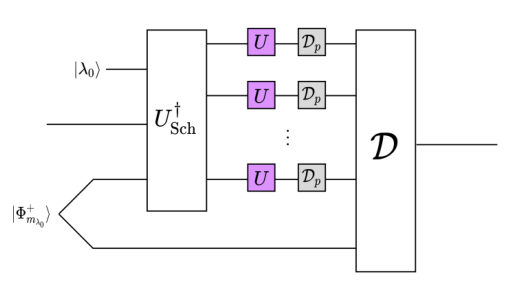
<figcaption class="paper-figure-caption"><b>Fig 1.</b> FIG. 1. An entanglement-assisted U(2)-covariant quantum error-correcting code (QECC) that purifies n noisy channels, which achieves the optimal scaling to first order in the noise strength. For odd integer n = 2k −1, we define λ0 := (k, k − 1), and |Φ+ mλ0 ⟩:= 1 √mλ0 Pmλ0 i=1 |i⟩⊗|i⟩. The unitary USch</figcaption>
</figure>
<figure class="paper-figure-card">
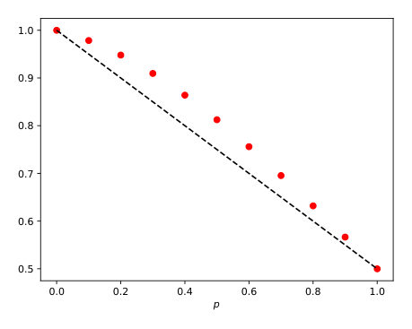
<figcaption class="paper-figure-caption"><b>Fig 2.</b> FIG. 2. The red dots show the optimal fidelity ef Seq 3,2 (p). Our numerics suggest that the optimal fidelity is achieved by a parallel strategy: ef Seq 3,2 (p) = ef Par 3,2 (p). The black dashed line shows the non-purified trivial fidelity.</figcaption>
</figure>
</div>

<p><strong>Summary.</strong> The paper tackles the challenging problem of purifying unknown unitary channels corrupted by noise. It rigorously compares sequential and parallel error correction strategies using SDPs and QECC bounds. The key finding is that while finite uses show protocol differences, asymptotically, both methods achieve the same optimal scaling for noise suppression.</p>
<p><strong>Why it may be interesting.</strong> This work provides deep insights into the fundamental limitations of quantum channel estimation and purification protocols, particularly clarifying when resource constraints (like sequential vs. parallel use) matter versus when scaling laws dominate in the low-noise limit.</p>
<details>
<summary>Detailed structure</summary>
<p><strong>Main problem.</strong> The core problem is purifying noisy qubit unitary channels, meaning constructing a superchannel that recovers an unknown original unitary $U$ despite repeated applications of the channel corrupted by depolarizing noise.</p>
<p><strong>Main result.</strong> While sequential strategies show a finite-use advantage over parallel ones, the analysis proves that in the low-noise limit ($p \ll 1$), both protocols achieve asymptotically optimal noise suppression scaling ($\Theta(1/n)$).</p>
<p><strong>Method.</strong> The problem is formulated and analyzed using Semidefinite Programming (SDP) techniques, comparing lower bounds derived from concrete entanglement-assisted Quantum Error-Correcting Codes (QECCs) against upper bounds derived from quantum metrological arguments.</p>
<p><strong>Model / system.</strong> The system involves qubit unitary channels subjected to depolarizing noise ($N_{U,p} = D_p \circ U$). The analysis is performed for $d=2$ qubits and generalizes the concept of channel purification beyond simple state purification.</p>
<p><strong>Key observables.</strong> Channel fidelity ($f_{	ext{Choi}}$) quantifying how close the output superchannel approximates the original unknown unitary, and the performance operator $\Omega_{n,p}$.</p>
<p><strong>Important parameters / regimes.</strong> Number of uses ($n$), depolarizing noise strength ($p$), and system dimension ($d=2$). The analysis focuses heavily on the low-noise limit ($p \ll 1$) and the asymptotic scaling $n 	o \infty$.</p>
<p><strong>Assumptions / limitations.</strong> The primary assumptions involve analyzing the process in the low-noise regime, using specific algebraic tools like Schur-Weyl duality for constraints, and comparing two distinct operational strategies: sequential versus parallel channel uses.</p>
<p><strong>Figures summary.</strong> Figures illustrate the performance comparison between sequential and parallel protocols; Table I provides numerical optimal fidelities for $d=2$ at small $n$, showing initial divergences that converge asymptotically.</p>
<p><strong>Paper structure.</strong> The paper progresses by first establishing the problem via SDP formulation, then providing numerical evidence distinguishing finite-$n$ strategies, followed by deriving rigorous lower and upper bounds using QECCs and QFI arguments to establish asymptotic optimality.</p>
</details>
<details>
<summary>Abstract</summary>
<p>We consider the problem of purifying noisy qubit unitary channels. Given the ability to apply an unknown qubit unitary channel followed by depolarizing noise, we aim to construct a superchannel that purifies the noisy unitary back to the original unknown unitary. We first provide numerical evidence that sequential strategies can strictly outperform parallel strategies when the number of channel uses is finite, highlighting the fundamental distinction from state purification. We then provide a concrete $\mathrm{U}(2)$-covariant parallel protocol based on a novel entanglement-assisted quantum error-correcting code that suppresses the first-order noise strength as $O(1/n)$ with $n$ channel uses and show this scaling is asymptotically optimal in the low-noise regime, even when sequential strategies are allowed.</p>
</details>
<p><sub><a href="#top">↑ back to top</a></sub></p>

<p><a id="paper-2606.11765"></a></p>
<h3 id="a-stochastic-model-for-elastoplastic-contact-of-rough-surfaces-incorporating-scale-dependent-hardness"><a href="http://arxiv.org/abs/2606.11765v1">A stochastic model for elastoplastic contact of rough surfaces incorporating scale-dependent hardness</a></h3>
<p><strong>Authors:</strong> Yang Xu, Hengxu Song, Jianqiao Hu<br>
<strong>Type:</strong> theory · <strong>Category:</strong> statistical mechanics · <strong>PDF:</strong> <a href="https://arxiv.org/pdf/2606.11765v1">https://arxiv.org/pdf/2606.11765v1</a><br>
<strong>Analysis basis:</strong> full PDF text, analyzed in chunks
<strong>Topic relevance:</strong> <code>non-equilibrium dynamics</code> <strong>2/5</strong> · <code>non-equilibrium universality</code> <strong>2/5</strong> · <code>Keldysh / 2PI / non-Gaussian methods</code> <strong>1/5</strong> · <code>driven-dissipative phase transition</code> <strong>1/5</strong> · <code>methods for driven-dissipative</code> <strong>1/5</strong></p>
<div class="figure-strip-hint">↔ Scroll figures horizontally</div>
<div class="paper-figures-scroll">
<figure class="paper-figure-card">
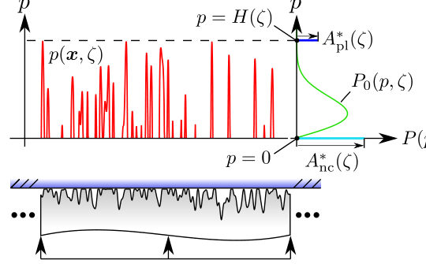
<figcaption class="paper-figure-caption"><b>Fig 1.</b> Figure 1: A cross-sectional view of the purely normal contact between a rigid flat and a rough surface and the schematic of the probability density function of the contact pressure.</figcaption>
</figure>
<figure class="paper-figure-card">
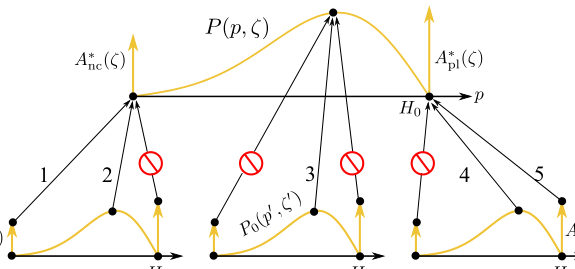
<figcaption class="paper-figure-caption"><b>Fig 2.</b> Figure 2: A graphical illustration of probability flow from P(p′, ζ′) to P(p, ζ) where hardness is a constant. The three PDFs at the bottom are all replicas of P(p′, ζ′).</figcaption>
</figure>
<figure class="paper-figure-card">
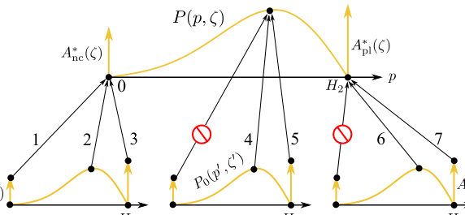
<figcaption class="paper-figure-caption"><b>Fig 3.</b> Figure 3: A graphical illustration of probability flow from P(p′, ζ′) to P(p, ζ) where hardness is scale-dependent. The three PDFs at bottom are all replicas of P(p′, ζ′)</figcaption>
</figure>
<figure class="paper-figure-card">
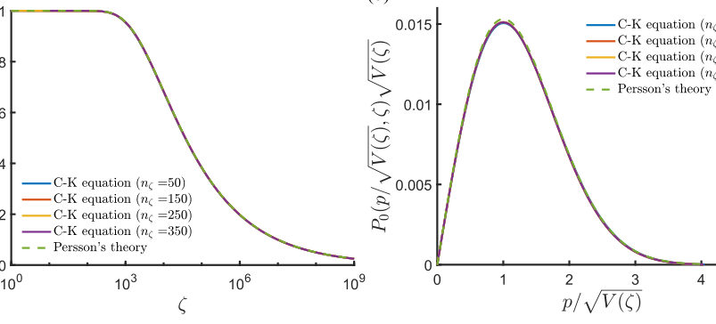
<figcaption class="paper-figure-caption"><b>Fig 4.</b> Figure 4: Convergence test of linear elastic contact solutions solved by Chapman-Kolmogorov (C-K) equation (solid lines) and Persson’s theory (dashed lines): (a) relative contact area A∗, (b) P0(p/ p</figcaption>
</figure>
<figure class="paper-figure-card">
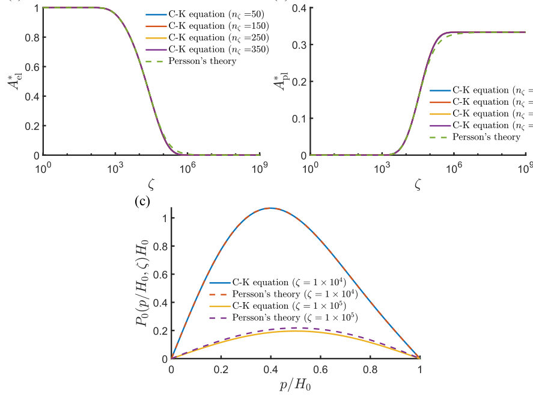
<figcaption class="paper-figure-caption"><b>Fig 5.</b> Figure 5: Convergence test of elastoplastic contact solutions with constant hardness solved by Chapman-Kolmogorov (C-K) equation (solid lines) and Persson’s theory (dashed lines): (a) relative elastic contact area A∗ el, (b) relative plastic contact area A∗ pl, (c) P0(p/H0, ζ). The magnification axis is discretized by various nζ. The mean pressure ¯p = 1.5 GPa, H0 = 3 GPa, C0 = 1 × 10−8 mm4, ql = 2π mm−1, H = 0.7, E = 200 GPa, ν = 0.33, ∆p0 = H0/99.</figcaption>
</figure>
</div>

<p><strong>Summary.</strong> This paper pioneers a stochastic model for elastoplastic contact on rough surfaces by incorporating the crucial effect of scale-dependent hardness. It uses compounded Chapman-Kolmogorov equations to track how probability distributions governing contact pressure and area evolve across different observation scales. The resulting framework provides advanced diagnostics to map out the transition between linear elastic, elastoplastic, and fully plastic regimes.</p>
<p><strong>Why it may be interesting.</strong> While focused on solid mechanics, the use of stochastic process theory, probability density function evolution across scales (Chapman-Kolmogorov), and multi-scale modeling techniques are highly relevant to non-equilibrium statistical physics problems in AMO or condensed matter systems where scale separation is key.</p>
<details>
<summary>Detailed structure</summary>
<p><strong>Main problem.</strong> The study addresses stress concentrations caused by inherent surface roughness leading to plastic deformation at contact interfaces, complicated by size effects and self-affine topography.</p>
<p><strong>Main result.</strong> The authors developed a stochastic framework using compounded Chapman-Kolmogorov equations to model the evolution of probability density functions describing elastic, plastic, and non-contact areas across geometrical scales.</p>
<p><strong>Method.</strong> The methodology involves formulating and solving three coupled integral equations derived from the compounded Chapman-Kolmogorov equation, which tracks probability flow as the observation scale changes.</p>
<p><strong>Model / system.</strong> The system is elastoplastic contact between rough surfaces. The model incorporates a novel element: scale-dependent hardness, $H(\zeta)$, which modifies the standard contact mechanics framework by introducing size effects into the yield criterion.</p>
<p><strong>Key observables.</strong> Probability density functions (PDFs) for elastic contact pressure, relative plastic contact area ($A^*_{pl}$), and relative non-contact area ($A^*_{nc}$).</p>
<p><strong>Important parameters / regimes.</strong> Scale-dependent hardness $H(\zeta)$, magnification $\zeta$, topographic yield parameter ($\omega$), Hurst exponent ($H$), and hardness exponent ($n$).</p>
<p><strong>Assumptions / limitations.</strong> The model builds upon stochastic process theory, though it notes that previous assumptions like 'no re-entry' are inaccurate in practice. Numerical solutions rely on discretizing the scale (magnification) axis.</p>
<p><strong>Figures summary.</strong> Figures illustrate probability flow for both constant and scale-dependent hardness, showing reopened paths due to size effects. Contour plots map contact status regimes based on misfit parameters ($M_{le}, M_{fp}$), comparing results against prior literature.</p>
<p><strong>Paper structure.</strong> The paper progresses from establishing the physical problem (rough surface elastoplasticity) to developing the core mathematical tool (compounded Chapman-Kolmogorov equation). It then details the derivation of integral equations, presents numerical solutions for various hardness regimes, and concludes by defining diagnostic parameters to map out contact status zones.</p>
</details>
<details>
<summary>Abstract</summary>
<p>The stress concentrations caused by inherent roughness of natural and manufactured surfaces often induce plastic deformation at contact interfaces, a challenge compounded by competing influences of the size effect of plastic deformation and self-affine rough surface topography. To address this, we developed a novel methodology based on stochastic theory using compounded Chapman-Kolmogorov equations, for the first time, to solve elastoplastic contact problems involving scale-dependent hardness. Our approach formulates three integral equations describing the evolution of probability density functions of elastic contact pressure, relative plastic contact area, and relative non-contact area across geometrical scales. We thoroughly investigate the effects of scale-dependent hardness on contact pressure distribution, relative elastic and plastic contact areas, and the area-to-load relationship. By adjusting various mechanical and material properties, our model predicts a smooth transition from linear elasticity to elastic-plastic behavior and finally to full plasticity. A key advancement is the derivation of a new topographic yield parameter incorporating a wider range of material and geometrical properties, aiding identification of contact status. Numerical solutions enable highly precise determination of elastic and plastic limits via curve-fitting, and we also provide a new diagram for rapid identification of contact status. This study pioneers a stochastic process framework for applying the compounded Chapman-Kolmogorov equation to rough surface contact analysis, and the integral equations characterizing how interfacial properties evolve with scale could offer valuable insights for other multidisciplinary fields where multiscale roughness is critical, such as earthquakes, electrical contact, and contact electrification.</p>
</details>
<p><sub><a href="#top">↑ back to top</a></sub></p>

<p><a id="paper-2606.12049"></a></p>
<h3 id="searching-for-cosmic-vortices"><a href="http://arxiv.org/abs/2606.12049v1">Searching for cosmic vortices</a></h3>
<p><strong>Authors:</strong> Marek Nikołajuk, Tomasz Karpiuk, Mirosław Brewczyk<br>
<strong>Type:</strong> theory · <strong>Category:</strong> quantum gases · <strong>PDF:</strong> <a href="https://arxiv.org/pdf/2606.12049v1">https://arxiv.org/pdf/2606.12049v1</a><br>
<strong>Analysis basis:</strong> full PDF text, analyzed in chunks
<strong>Topic relevance:</strong> <code>analog quantum simulation</code> <strong>2/5</strong> · <code>non-equilibrium dynamics</code> <strong>2/5</strong> · <code>Keldysh / 2PI / non-Gaussian methods</code> <strong>1/5</strong> · <code>driven-dissipative phase transition</code> <strong>1/5</strong> · <code>methods for driven-dissipative</code> <strong>1/5</strong></p>
<div class="figure-strip-hint">↔ Scroll figures horizontally</div>
<div class="paper-figures-scroll">
<figure class="paper-figure-card">
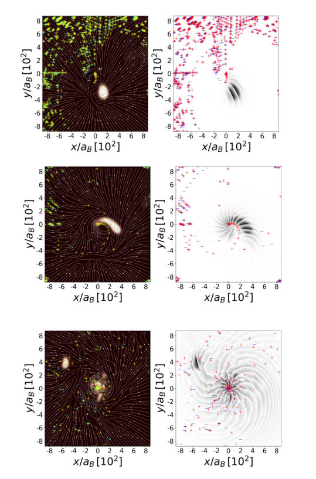
<figcaption class="paper-figure-caption"><b>Fig 1.</b> Figure 1. Bosonic density (left column) and quantum phase (right column) at the z = 0 plane for different time instants. The density and time are in units of 1/a3 B and mBa2 B/ℏ, re- spectively. The positions of the positive and negative quan- tized vortices are marked by red/yellow plus signs and blue minus signs, respectively. Initially, there are no vortices asso- ciated with the white dwarf (top frame), although many are visible in the background noise. Later on, the white dwarf drags some vortices into an accretion disc that is forming (middle frame). Finally (bottom frame), the white dwarf moves away from a black hole, taking a few vortices with it.</figcaption>
</figure>
<figure class="paper-figure-card">
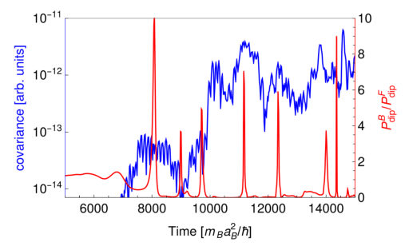
<figcaption class="paper-figure-caption"><b>Fig 2.</b> Figure 3. Ratio P B dip/P F dip (in red) and the maximum co- variance (in blue) are plotted as a function of time. The red spikes representing the ratio clearly correlate with time intervals of high covariance.</figcaption>
</figure>
<figure class="paper-figure-card">
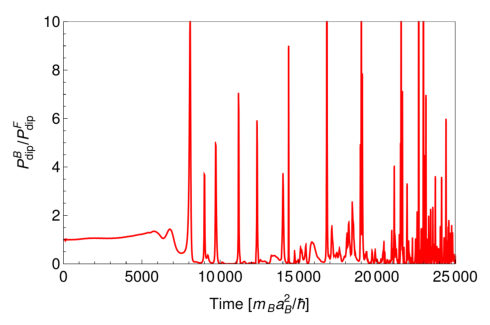
<figcaption class="paper-figure-caption"><b>Fig 3.</b> Figure 2. P B dip/P F dip as a function of time. Several peaks are visible within the time interval between 5000 and 10000, indicating the preliminary stage of cosmic vortex formation in the accretion disc. The dipole electromagnetic radiation power is calculated within a cylinder with a radius of 500 aB. Later, the dynamics of the accretion disc become more com- plex.</figcaption>
</figure>
<figure class="paper-figure-card">
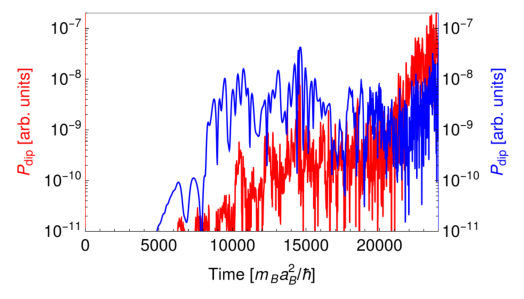
<figcaption class="paper-figure-caption"><b>Fig 4.</b> Figure 4. Electromagnetic dipole radiation power coming from a region with a radius of 700 aB (blue curve) and orig- inating from the ten most powerful plaquettes with vortices (red curve) as a function of time.</figcaption>
</figure>
<figure class="paper-figure-card">
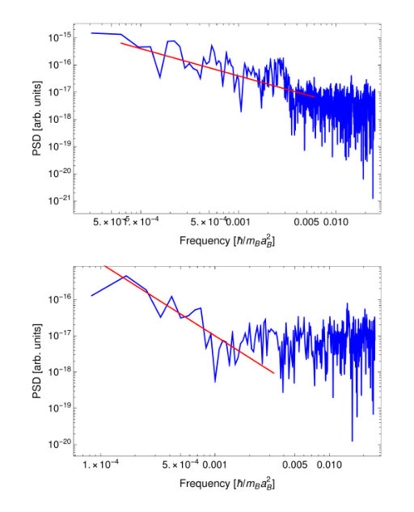
<figcaption class="paper-figure-caption"><b>Fig 5.</b> Figure 6. Power spectrum density of the radiation coming from the accretion disc is shown as a function of frequency (f). PSD ∼1/f (solid red line) exhibits flicker noise when the preformation period is included in the analysis, followed by a white noise tail at the highest frequencies (top frame). However, when examining radiation from a well-formed ac- cretion disc, the PSD changes qualitatively to PSD ∼1/f 2</figcaption>
</figure>
</div>

<p><strong>Summary.</strong> This theoretical study models the tidal disruption of a helium white dwarf by a black hole, treating the matter as a Bose-Fermi droplet governed by quantum hydrodynamics. The key findings are that quantized vortices generate distinct electromagnetic flickering patterns in the resulting accretion disc, and these same vortices cause the escaping white dwarf to emit detectable gravitational waves.</p>
<p><strong>Why it may be interesting.</strong> This work applies quantum hydrodynamic techniques, typically used for ultracold atomic systems (Bose-Fermi droplets), to extreme astrophysical environments, linking fundamental quantum phenomena (vortices) to observable signals like GWs and EM radiation.</p>
<details>
<summary>Detailed structure</summary>
<p><strong>Main problem.</strong> The study searches for cosmic vortices generated during the tidal disruption of a cold helium white dwarf passing near a black hole, and investigates the resulting electromagnetic radiation and gravitational wave emission.</p>
<p><strong>Main result.</strong> Vortices generate characteristic flickering electromagnetic radiation signals in the accretion disc, and their subsequent propagation along the escaping white dwarf's surface causes measurable gravitational wave emission.</p>
<p><strong>Method.</strong> The authors use quantum hydrodynamic equations to model the binary system evolution, simulating both electromagnetic power spectra and gravitational wave strain.</p>
<p><strong>Model / system.</strong> The physical system is a cold helium white dwarf modeled as a Bose-Fermi droplet interacting with a black hole. The dynamics are governed by coupled quantum hydrodynamic equations for bosonic and fermionic components using pseudo-Newtonian potentials.</p>
<p><strong>Key observables.</strong> Electromagnetic radiation flickering patterns (Power Spectral Density, $P_{	ext{dip}}$), the ratio of bosonic to fermionic dipole power ($P_B^{	ext{dip}}/P_F^{	ext{dip}}$), and gravitational wave strain ($h_+, h_	imes$).</p>
<p><strong>Important parameters / regimes.</strong> Timescales of a few seconds for flickering; GW frequencies around 1 Hz; BH modeled as non-rotating (Schwarzschild metric).</p>
<p><strong>Assumptions / limitations.</strong> The fermionic density follows the bosonic one ($ar{n}_F = ar{n}_B$), and the black hole is assumed to be non-rotating.</p>
<p><strong>Figures summary.</strong> Figures illustrate the process from initial symmetry breaking through vortex dragging into the accretion disc, showing correlations between radiation spikes and vortex presence, and demonstrating the transition of the Power Spectral Density (PSD) from $1/f$ to $1/f^2$.</p>
<p><strong>Paper structure.</strong> The paper follows a logical progression: first modeling the initial tidal disruption and vortex generation in the accretion disc (EM signals); second, analyzing the electromagnetic radiation signatures linked to these vortices; and finally, examining the gravitational wave emission from the departing, vortex-laden white dwarf.</p>
</details>
<details>
<summary>Abstract</summary>
<p>Our study focuses on the strong tidal disruption of a cold helium white dwarf passing a black hole. We model the white dwarf as a Bose-Fermi droplet and use quantum hydrodynamic equations to simulate the binary system's evolution. As the white dwarf passes through periastron, it loses a significant amount of mass. This mass falls onto the black hole and forms an accretion disc. Quantized vortices appear in the accretion disc, manifesting as strong electromagnetic radiation signals that exhibit characteristic flickering patterns changing on a timescale of a few seconds. Meanwhile, the white dwarf moves away from the black hole. As the white dwarf moves through space, vortices run along its surface. This elongates its geometry, causing it to rotate and emit gravitational waves.</p>
</details>
<p><sub><a href="#top">↑ back to top</a></sub></p>

<p><a id="paper-2606.11527"></a></p>
<h3 id="invariants-of-sequential-circuits-and-generalized-non-abelian-statistics"><a href="http://arxiv.org/abs/2606.11527v1">Invariants of Sequential Circuits and Generalized Non-Abelian Statistics</a></h3>
<p><strong>Authors:</strong> Shintaro Sato, Yoshimasa Hidaka, Ryohei Kobayashi<br>
<strong>Type:</strong> theory · <strong>Category:</strong> strongly correlated electrons · <strong>PDF:</strong> <a href="https://arxiv.org/pdf/2606.11527v1">https://arxiv.org/pdf/2606.11527v1</a><br>
<strong>Analysis basis:</strong> full PDF text, analyzed in chunks
<strong>Topic relevance:</strong> <code>entanglement &amp; information structure</code> <strong>2/5</strong> · <code>Keldysh / 2PI / non-Gaussian methods</code> <strong>1/5</strong> · <code>analog quantum simulation</code> <strong>1/5</strong> · <code>driven-dissipative phase transition</code> <strong>1/5</strong> · <code>non-equilibrium dynamics</code> <strong>1/5</strong></p>
<div class="figure-strip-hint">↔ Scroll figures horizontally</div>
<div class="paper-figures-scroll">
<figure class="paper-figure-card">
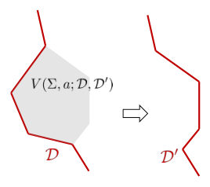
<figcaption class="paper-figure-caption"><b>Fig 1.</b> FIG. 1. A sequential circuit V (Σ, a; D, D′) is supported at a region Σ. The corresponding symmetry generator is labeled by a (generally an object of a symmetry category), and trans- forms a defect network.</figcaption>
</figure>
<figure class="paper-figure-card">
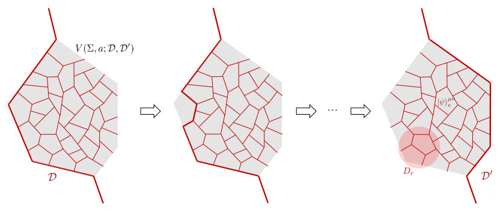
<figcaption class="paper-figure-caption"><b>Fig 2.</b> FIG. 2. We break a sequential circuit V (Σ, a; D, D′) into small fractions {Lr′}, so that each fraction is contained in a disk Dr of radius r (red disk). A process of moving a defect breaks into D →D1 →...Dn →D′ via intermediate configurations. Each edge e of the fine network supports an MPS state |ψ⟩µν e , which constitutes a 1d state localized along the defect. Each local phase factor θ(Lr′, a; Dj|Lr′ , Dj+1|Lr′ ) cancels out due to the locality constraints on integer coefficients ϵ.</figcaption>
</figure>
<figure class="paper-figure-card">
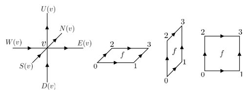
<figcaption class="paper-figure-caption"><b>Fig 3.</b> FIG. 3. Labels and orientations of a vertex and faces on the cubic lattice.</figcaption>
</figure>
<figure class="paper-figure-card">
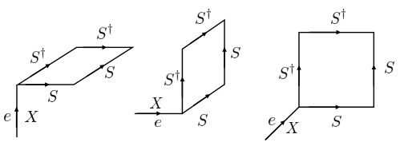
<figcaption class="paper-figure-caption"><b>Fig 4.</b> FIG. 4. Definition of the operator Se.</figcaption>
</figure>
<figure class="paper-figure-card">
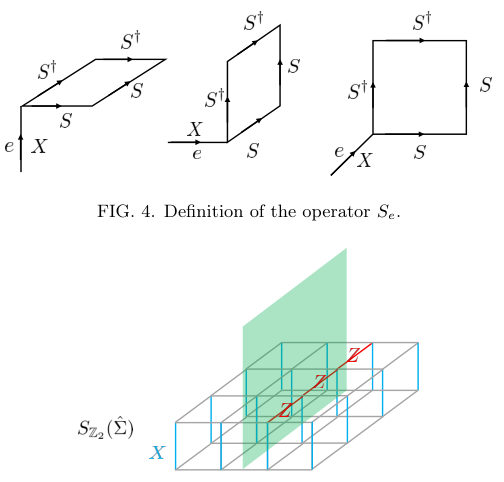
<figcaption class="paper-figure-caption"><b>Fig 5.</b> FIG. 5. The surface operator SZ2(ˆΣ) on a Klein bottle. The Pauli X operators are supported on blue edges, while the Pauli Z operators are supported on red ones. The red edges correspond to the intersection between the surface Σ and the orientation-reversing domain wall (green sheet).</figcaption>
</figure>
</div>

<p><strong>Summary.</strong> This work develops a novel invariant based on the Berry phase accumulated by sequential unitary circuits moving symmetry defects. By applying this invariant to (3+1)D lattice models, the authors characterize a new non-Abelian fermionic loop excitation and demonstrate that its presence protects an intrinsically long-range entangled mixed topological order.</p>
<p><strong>Why it may be interesting.</strong> The connection between symmetry protection, higher-form anomalies, and entanglement structure is central to modern condensed matter theory. The use of sequential circuits provides a powerful, purely unitary diagnostic tool for detecting non-trivial topological phases beyond standard symmetries.</p>
<details>
<summary>Detailed structure</summary>
<p><strong>Main problem.</strong> The paper investigates invariants defined by sequences of unitary circuits that move non-invertible symmetry defects to characterize 't Hooft anomalies for such symmetries.</p>
<p><strong>Main result.</strong> They identify a new non-Abelian fermionic loop in (3+1)D D4 topological order and show its self-statistics are fermionic, characterized by an invariant value of -1.</p>
<p><strong>Method.</strong> The core method involves deriving necessary invariance conditions for the Berry phase associated with sequential circuits under local deformations. These invariants are then applied to calculate statistics in lattice gauge theories.</p>
<p><strong>Model / system.</strong> The analysis is performed on quantum many-body systems, specifically focusing on loop excitations in (3+1)D D4 topological order and a newly constructed mixed topological order protected by the derived invariant.</p>
<p><strong>Key observables.</strong> Berry phase ($\Theta$), self-statistics of loops ($U_\Theta$), and the existence/value of invariants under local deformations.</p>
<p><strong>Important parameters / regimes.</strong> The dimensionality (3+1)D, the symmetry group structure ($D_4$), and the nature of entanglement (Short-Range vs. Long-Range).</p>
<p><strong>Assumptions / limitations.</strong> Invariance requires specific conditions on circuit locality and the assumption that local deformations preserve operator locality; the analysis also relies on factorizing defect states in SRE limits.</p>
<p><strong>Figures summary.</strong> Figures illustrate sequential circuits, defect network transformations (D to D'), lattice structures for $D_4$, and the process of expanding supports using local unitaries.</p>
<p><strong>Paper structure.</strong> The paper progresses from establishing general invariance conditions for Berry phases associated with non-invertible symmetries in abstract terms. It then applies this framework sequentially: first to characterize anomalies via SRE states, followed by specific applications to fermionic loops in $D_4$ and the construction of a protected mixed topological order.</p>
</details>
<details>
<summary>Abstract</summary>
<p>Non-invertible symmetries in quantum many-body systems generally give rise to sequential unitary circuits that move symmetry defects. In this paper, we investigate invariants defined by sequences of such circuits, which move non-invertible defects and generate a Berry phase evaluated on quantum states with defects. We show that this Berry phase generally defines an invariant under local deformations, provided that the sequential circuits preserve the locality of those deformations. This invariant also rules out a short-range-entangled state that preserves the non-invertible symmetry, thereby signaling the 't Hooft anomaly of a non-invertible symmetry purely in terms of unitary operators acting on a state. We then apply this framework to loop excitations in three spatial dimensions and identify a new loop excitation in the (3+1)D $\mathbb{D}_4$ topological order, which we dub a non-Abelian fermionic loop. Using the invariant of sequential circuits, we characterize the statistics of non-Abelian fermionic loops. In addition, we find a new (3+1)D mixed topological order with a single non-Abelian fermionic loop, whose long-range entanglement is protected by an invariant of sequential circuits.</p>
</details>
<p><sub><a href="#top">↑ back to top</a></sub></p>

<p><a id="paper-2606.12045"></a></p>
<h3 id="a-geometric-family-of-correlations-containing-the-quantum-singlet"><a href="http://arxiv.org/abs/2606.12045v1">A Geometric Family of Correlations Containing the Quantum Singlet</a></h3>
<p><strong>Authors:</strong> E. Aldo Arroyo<br>
<strong>Type:</strong> theory · <strong>Category:</strong> other · <strong>PDF:</strong> <a href="https://arxiv.org/pdf/2606.12045v1">https://arxiv.org/pdf/2606.12045v1</a><br>
<strong>Analysis basis:</strong> full PDF text, analyzed in chunks
<strong>Topic relevance:</strong> <code>entanglement &amp; information structure</code> <strong>2/5</strong></p>
<div class="figure-strip-hint">↔ Scroll figures horizontally</div>
<div class="paper-figures-scroll">
<figure class="paper-figure-card">
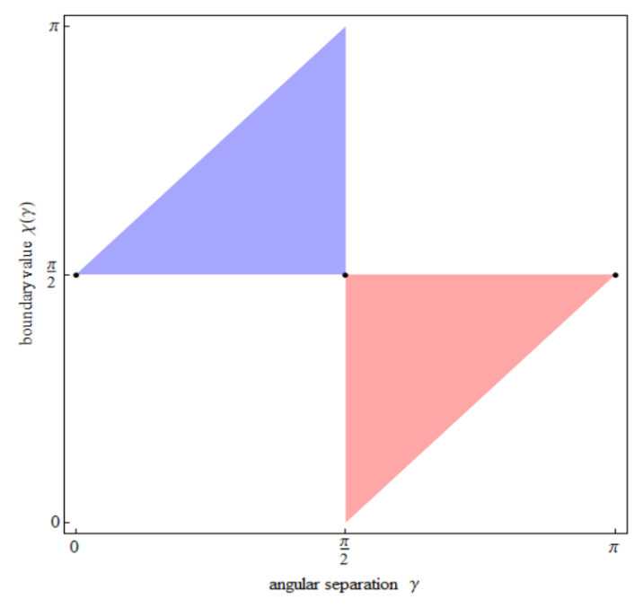
<figcaption class="paper-figure-caption"><b>Fig 1.</b> Figure 1: Space of admissible boundary functions. The shaded region defines the allowed values of χ(γ) for each angular separation γ. Continuous admissible boundary functions form a family of curves contained within this domain, all sharing the fixed points (0, π/2), (π/2, π/2) and (π, π/2).</figcaption>
</figure>
</div>

<p><strong>Summary.</strong> The paper develops a novel hidden-variable framework that generates an entire family of correlation functions parameterized by a boundary function $\chi(\gamma)$. It successfully demonstrates that the measurable CHSH value at $
u=\pi/4$ is mathematically equivalent to a purely geometric contrast measure $D(\pi/4)$ derived from the state space geometry. This places the quantum singlet correlation within a broader, geometrically constrained structure of possible correlations.</p>
<p><strong>Why it may be interesting.</strong> This work provides a powerful, non-standard geometric lens through which quantum correlations (like the singlet state) can be understood as special points within a continuous mathematical structure of classical-like models.</p>
<details>
<summary>Detailed structure</summary>
<p><strong>Main problem.</strong> The central goal is to embed the quantum singlet correlation within a larger, geometrically defined family of correlations generated by restricted hidden-variable models.</p>
<p><strong>Main result.</strong> An exact geometric relation was established linking the CHSH value at $
u=\pi/4$ to a purely geometric contrast measure $D(\pi/4)$, proving that this observable quantity is determined solely by the underlying geometry of admissible states.</p>
<p><strong>Method.</strong> The authors derived correlation functions and Bell-CHSH expectation values using integrals over geometrically constrained hidden-variable distributions defined by an admissible boundary function $\chi(\gamma)$.</p>
<p><strong>Model / system.</strong> The model uses a hidden-variable framework where the variable $\lambda$ is restricted to lie within a specific, geometrically defined region on $S^2$, parameterized by the boundary function $\chi(\gamma)$. The correlations are calculated based on local deterministic outcomes.</p>
<p><strong>Key observables.</strong> Correlation function $E(\gamma)$, CHSH value $S(
u)$, and geometric contrast measure $D(\gamma)$.</p>
<p><strong>Important parameters / regimes.</strong> The admissible boundary function $\chi(\gamma)$ is the primary parameter controlling the entire family of correlations; $\gamma$ (angular separation) and $
u$ (angle for CHSH testing) are key variables.</p>
<p><strong>Assumptions / limitations.</strong> The analysis assumes that physical correlations can be fully characterized by restricting the set of admissible hidden-variable states via the function $\chi(\gamma)$.</p>
<p><strong>Figures summary.</strong> Figure 1 geometrically represents the allowed domain for the boundary function $\chi(\gamma)$ in the $(\gamma, \chi)$ plane.</p>
<p><strong>Paper structure.</strong> The paper systematically builds the framework by defining the admissible region ($\Gamma_\gamma$), deriving the correlation function $E(\gamma)$ based on $\chi(\gamma)$, and then establishing key theorems linking observable quantities like $S(\pi/4)$ to geometric properties like $D(\pi/4)$.</p>
</details>
<details>
<summary>Abstract</summary>
<p>We introduce a geometrically constrained hidden-variable framework that generates a family of correlations parametrized by a boundary function, within which the quantum singlet correlation appears as a particular member. Exact expressions for the correlation function are derived. Several structural results are established, including admissibility conditions, symmetry properties, a universal stationary point of the associated CHSH function, and an exact relation between the CHSH value at $ν=π/4$ and a geometric contrast measure defined on the underlying hidden-variable distributions. Rather than treating the quantum singlet correlation as an isolated target to be reproduced, the present framework places it within a broader geometric structure of correlations. These results suggest the existence of a nontrivial geometric structure underlying the family of correlations and motivate the search for a principle capable of selecting the quantum singlet solution from within that family.</p>
</details>
<p><sub><a href="#top">↑ back to top</a></sub></p>

<p><a id="paper-2606.12363"></a></p>
<h3 id="fermions-are-fundamentally-more-nonlocal-than-bosons"><a href="http://arxiv.org/abs/2606.12363v1">Fermions are fundamentally more nonlocal than Bosons</a></h3>
<p><strong>Authors:</strong> Fatemeh Moradi Kalarde, Sadra Boreiri, Xiangling Xu, Lucas Tendick, Salman Beigi, Paolo Perinotti, Tommaso Guaita, Marc-Olivier Renou<br>
<strong>Type:</strong> theory · <strong>Category:</strong> quantum information and computing · <strong>PDF:</strong> <a href="https://arxiv.org/pdf/2606.12363v1">https://arxiv.org/pdf/2606.12363v1</a><br>
<strong>Analysis basis:</strong> full PDF text, analyzed in chunks
<strong>Topic relevance:</strong> <code>entanglement &amp; information structure</code> <strong>2/5</strong></p>
<div class="figure-strip-hint">↔ Scroll figures horizontally</div>
<div class="paper-figures-scroll">
<figure class="paper-figure-card">
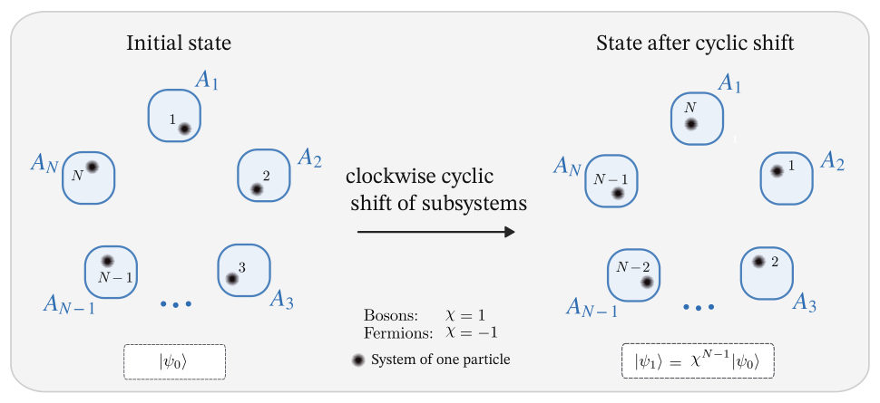
<figcaption class="paper-figure-caption"><b>Fig 1.</b> Figure 1: Cyclic exchange and fermionic phase. (a) N parties A1, . . . , AN initially hold one particle (represented by the black disk) each, in a global state |ψ0⟩= a† 1 · · · a† N|vac⟩. a† i denotes the bosonic or fermionic creation operator of particle at mode i, depending on the particle type. (b) After a clockwise cyclic shift of the particles, the state becomes |ψ1⟩= a† Na† 1 · · · a† N−1|vac⟩= χN−1|ψ0⟩. For bosons, χ = 1, while for fermions χ = −1, giving a parity-dependent global phase.</figcaption>
</figure>
<figure class="paper-figure-card">
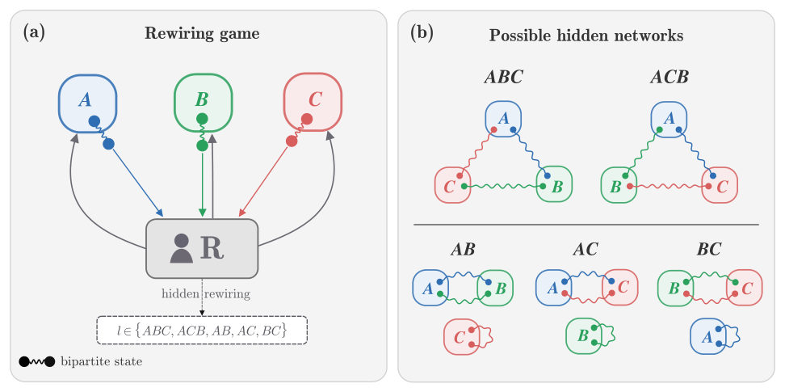
<figcaption class="paper-figure-caption"><b>Fig 2.</b> Figure 2: Distributed rewiring game: (a) Parties A, B, C each locally prepare bipartite systems, keep one subsystem, and send the other to a referee R. The referee is a passive relay introduced to formalize the requirement that the local operations of the parties do not depend on the global network configuration. The referee secretly chooses a wiring l ∈{ABC, ACB, AB, AC, BC} and redistributes the sent subsystems accordingly as illustrated in (b), while also assigning inputs xi ∈{0, 1}. Following the protocol described in the main text, each party i ∈{A, B, C} performs an input-dependent measurement and obtains an outcome ai ∈{0, 1+, 1−, 2}. The observations of the experiment are...</figcaption>
</figure>
</div>

<p><strong>Summary.</strong> This paper proves that indistinguishable fermions possess a unique, stronger form of nonlocality compared to bosons or qubits. By analyzing multi-party network correlations, the authors demonstrate that fermionic anticommutation is an unavoidable operational resource necessary for certain quantum information tasks. This work advocates for developing 'febits' as essential carriers beyond standard qubit descriptions.</p>
<p><strong>Why it may be interesting.</strong> It provides a rigorous theoretical framework for understanding how particle statistics (Pauli exclusion principle) translate into nonclassical resources for quantum computation and communication protocols beyond standard qubit models.</p>
<details>
<summary>Detailed structure</summary>
<p><strong>Main problem.</strong> To prove that indistinguishable fermions generate correlations fundamentally stronger than those achievable by bosons or distinguishable particles, thereby establishing fermionic nonlocality as a key resource.</p>
<p><strong>Main result.</strong> Fermions are shown to be fundamentally more nonlocal than bosons or qubits, implying that fermionic information carriers (febits) can surpass qubit-based protocols for certain distributed computing tasks.</p>
<p><strong>Method.</strong> The analysis uses analogies to Bell's theorem and constructs multi-party 'Gedankenexperiments' involving local communication rounds in a network setting. The core technique involves comparing conditional probability distributions derived from fermionic anticommutation versus bosonic/qubit models.</p>
<p><strong>Model / system.</strong> The model compares three types of quantum carriers: qubits (internal states), indistinguishable bosons, and indistinguishable fermions. The physics is analyzed using second quantization formalism in the context of distributed quantum communication networks or multi-party loops.</p>
<p><strong>Key observables.</strong> Exchange phase ($\chi = -1$ for fermions vs $\chi = 1$ for bosons); conditional probability distributions $P_{f}$ vs $P_{	ext{Q-QIT}}$; total variation distance ($d_{	ext{cond}}^{	ext{TV}}$).</p>
<p><strong>Important parameters / regimes.</strong> Loop size $N$; number of communication rounds; the parity of fermionic exchanges.</p>
<p><strong>Assumptions / limitations.</strong> The analysis assumes a locality constraint where local operations cannot depend on an unknown global network configuration ($\ell$), and that the comparison is restricted to single-round or limited-round communication protocols.</p>
<p><strong>Figures summary.</strong> Figures illustrate cyclic exchange showing phase differences; another figure depicts a 'Distributed rewiring game' comparing fermionic vs. qubit simulation outcomes across various hidden wirings.</p>
<p><strong>Paper structure.</strong> The paper progresses from establishing the fundamental difference in correlation generation (fermions vs bosons) to analyzing multi-party loop structures, culminating in detailed mathematical proofs regarding operator identities and structural properties of unitaries acting on tensor product spaces.</p>
</details>
<details>
<summary>Abstract</summary>
<p>Bell's theorem shows that entangled quantum particles can exhibit correlations that classical particles cannot reproduce without an additional nonlocal resource, such as communication. In this sense, quantum particles are fundamentally more nonlocal than classical ones, and entanglement becomes unavoidable in physics. Here we prove the analogous result within quantum theory itself: indistinguishable fermions transmitted through a quantum network can generate correlations that distinguishable particles or indistinguishable bosons cannot reproduce without additional communication. In the same sense, fermions are fundamentally more nonlocal than bosons or distinguishable particles, motivating fermionic anticommutation and indistinguishability as unavoidable operational resources. Our result further implies that fermions can strictly surpass all qubit-based protocols for certain distributed computing tasks, demonstrating that a complete understanding of information processing requires going beyond qubits to fermionic information carriers - febits.</p>
</details>
<p><sub><a href="#top">↑ back to top</a></sub></p>

<p><a id="paper-2606.11679"></a></p>
<h3 id="consistent-evaluation-of-operators-involving-the-position-operator-in-the-bloch-representation-application-to-the-orbital-moment"><a href="http://arxiv.org/abs/2606.11679v1">Consistent Evaluation of Operators Involving the Position Operator in the Bloch Representation: Application to the Orbital Moment</a></h3>
<p><strong>Authors:</strong> Daehyeon An, Junmo Jeon, Se Kwon Kim<br>
<strong>Type:</strong> theory · <strong>Category:</strong> other · <strong>PDF:</strong> <a href="https://arxiv.org/pdf/2606.11679v1">https://arxiv.org/pdf/2606.11679v1</a><br>
<strong>Analysis basis:</strong> full PDF text, analyzed in chunks
<strong>Topic relevance:</strong> <code>Keldysh / 2PI / non-Gaussian methods</code> <strong>1/5</strong> · <code>analog quantum simulation</code> <strong>1/5</strong> · <code>driven-dissipative phase transition</code> <strong>1/5</strong> · <code>methods for driven-dissipative</code> <strong>1/5</strong> · <code>non-equilibrium dynamics</code> <strong>1/5</strong></p>
<div class="figure-strip-hint">↔ Scroll figures horizontally</div>
<div class="paper-figures-scroll">
<figure class="paper-figure-card">
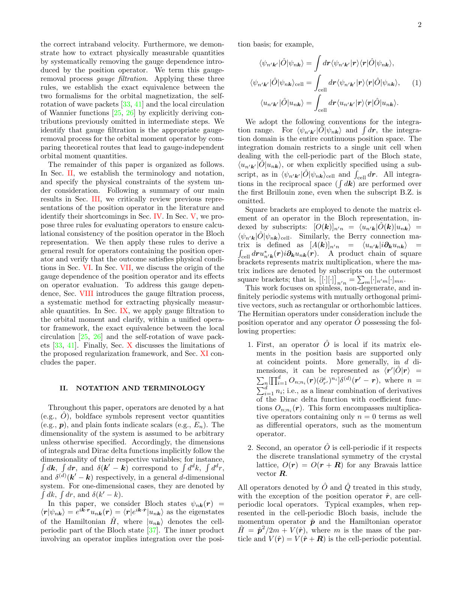
<figcaption class="paper-figure-caption"><b>Fig 1.</b> Low-resolution page preview, page 2</figcaption>
</figure>
<figure class="paper-figure-card">
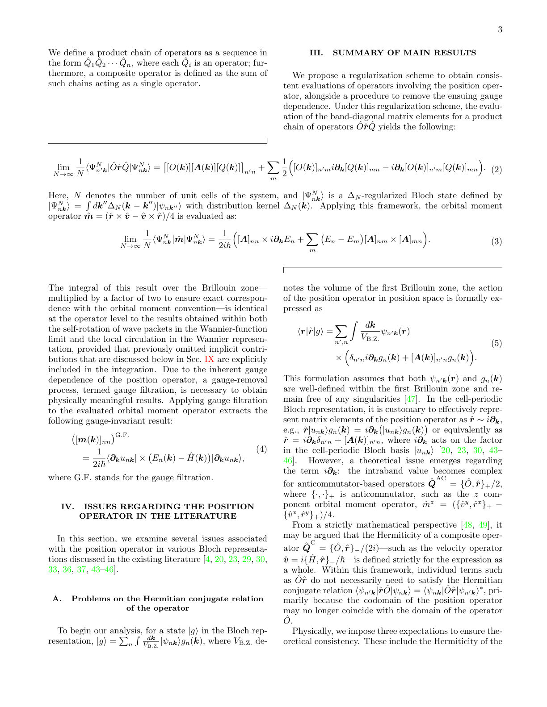
<figcaption class="paper-figure-caption"><b>Fig 2.</b> Low-resolution page preview, page 3</figcaption>
</figure>
<figure class="paper-figure-card">
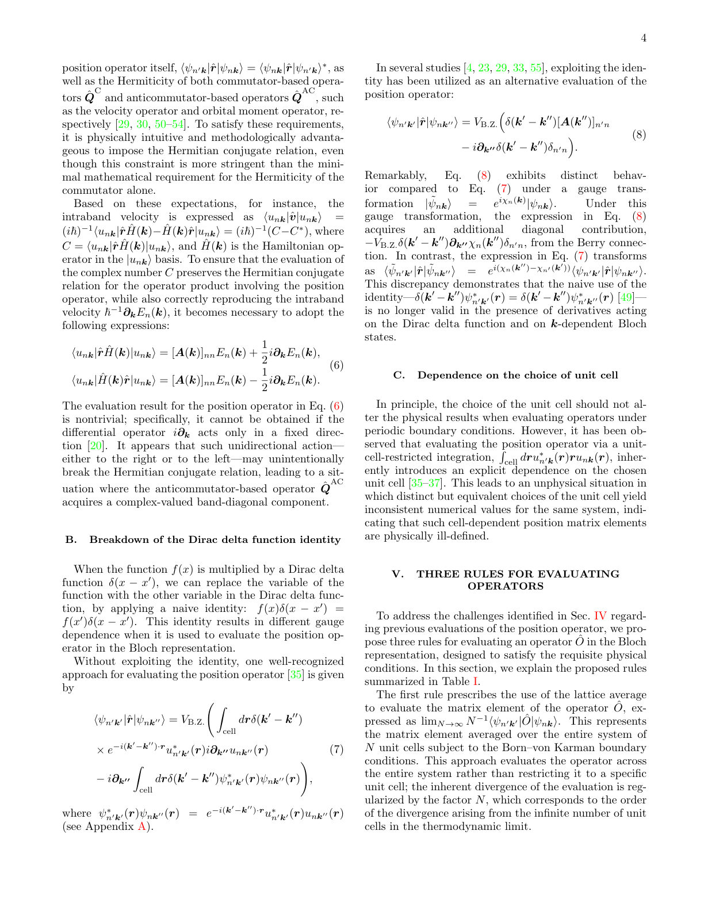
<figcaption class="paper-figure-caption"><b>Fig 3.</b> Low-resolution page preview, page 4</figcaption>
</figure>
<figure class="paper-figure-card">
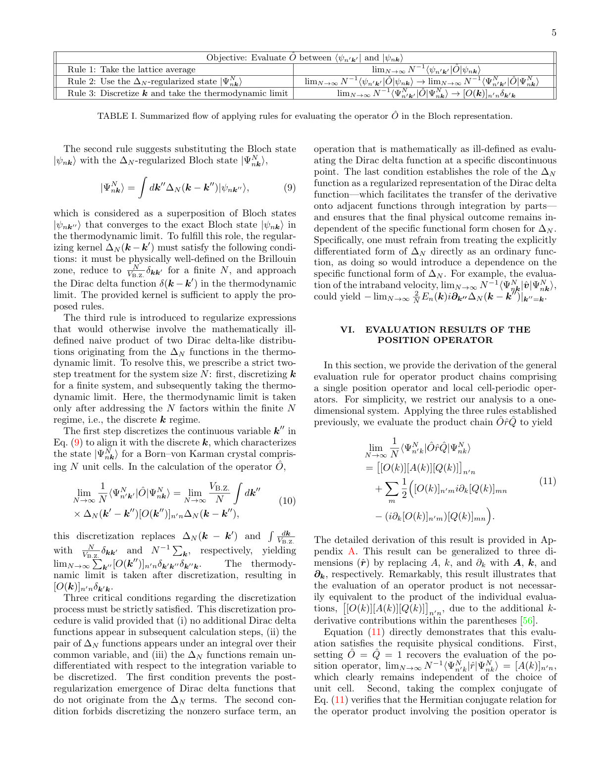
<figcaption class="paper-figure-caption"><b>Fig 4.</b> Low-resolution page preview, page 5</figcaption>
</figure>
<figure class="paper-figure-card">
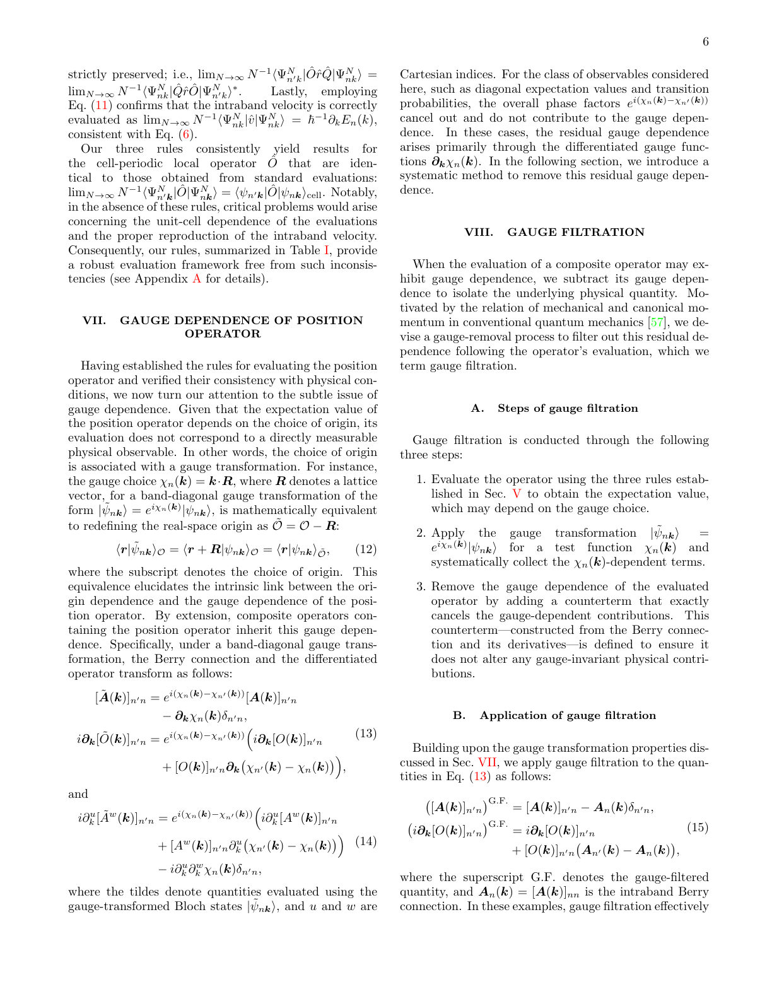
<figcaption class="paper-figure-caption"><b>Fig 5.</b> Low-resolution page preview, page 6</figcaption>
</figure>
</div>

<p><strong>Summary.</strong> This paper develops a comprehensive set of rules to consistently evaluate complex operators containing the position operator ($\hat{r}$) within the Bloch representation. By introducing 'gauge filtration,' the authors resolve long-standing discrepancies between different theoretical methods for calculating physical quantities like the orbital moment in solids. This establishes a robust, gauge-invariant framework essential for accurate condensed matter theory.</p>
<p><strong>Why it may be interesting.</strong> While focused on condensed matter theory rather than AMO systems directly, the rigorous mathematical techniques developed—especially systematic gauge removal and regularization of position operators in periodic boundary conditions—are highly relevant for any theoretical work involving Bloch wavefunctions or Berry curvature calculations in quantum optics or cold atom lattices.</p>
<details>
<summary>Detailed structure</summary>
<p><strong>Main problem.</strong> The central challenge is establishing a mathematically consistent framework for evaluating expectation values of operators involving the position operator ($\hat{r}$) within the Bloch representation in solid-state physics.</p>
<p><strong>Main result.</strong> The authors propose three rigorous rules and introduce 'gauge filtration' to systematically remove unphysical gauge dependencies, successfully reconciling different formalisms (self-rotation vs. local circulation) for calculating observables like the orbital moment.</p>
<p><strong>Method.</strong> The methodology involves developing specific regularization schemes ($\Delta_N$-regularization) and deriving general evaluation rules for operator product chains $\langle \hat{O}\hat{r}\hat{Q} 
angle$ to ensure physical consistency across different theoretical approaches.</p>
<p><strong>Model / system.</strong> The study is set in the context of infinitely periodic solid-state systems, using Bloch states $|\psi_{nk}
angle$ and analyzing observables like velocity, orbital moment ($\hat{m}$), and polarization within the Brillouin zone.</p>
<p><strong>Key observables.</strong> Orbital moment ($\hat{\mathbf{m}}$), intraband group velocity ($v_n$), expectation values of $\hat{r}$, and gauge-invariant quantities derived from Berry connection/curvature.</p>
<p><strong>Important parameters / regimes.</strong> The analysis depends on the lattice structure (e.g., rectangular, orthorhombic) and requires taking limits related to unit cell size and regularization parameters ($N 	o \infty$).</p>
<p><strong>Assumptions / limitations.</strong> Key assumptions include assuming spinless, non-degenerate bands; the derived rules are strictly valid only when the maximum derivative order acting on the regularization function is $\le 1$.</p>
<p><strong>Figures summary.</strong> Not specified in the notes.</p>
<p><strong>Paper structure.</strong> The paper progresses by identifying inconsistencies (discrepancies between formalisms), proposing three corrective evaluation rules, introducing gauge filtration to remove artifacts from origin shifts/gauge choices, and finally applying this framework to reconcile results for the orbital moment calculation.</p>
</details>
<details>
<summary>Abstract</summary>
<p>The position operator plays a central role in condensed-matter observables such as velocity, orbital moment, and electric polarization. In solid-state physics, the evaluation of operators incorporating the position operator has not reached a consensus, as observed in the operator-level discrepancy between the local circulation of Wannier functions and the self-rotation of wave packets. Here, to achieve a consistent evaluation of such operators, we propose three rules for evaluating operators involving the position operator in the Bloch representation. The rules are devised to satisfy physical conditions: independence from the choice of unit cell, preservation of Hermitian conjugacy for the product of operators, and recovery of the correct intraband velocity. We further address the gauge dependence of the position operator and introduce a scheme termed gauge filtration, which systematically removes gauge-dependent contributions from the operators containing the position operator. This methodology ensures that the quantities obtained from the operator evaluation correspond to observable physical phenomena. By applying our framework, we reconcile the results concerning the self-rotation of the wave packet and the local circulation of the Wannier function. We expect our proposal to establish a consistent framework for evaluating operators involving the position operator.</p>
</details>
<p><sub><a href="#top">↑ back to top</a></sub></p>

<p><a id="paper-2606.11991"></a></p>
<h3 id="estimation-of-conserved-charges-for-a-one-dimensional-system-with-inhomogeneous-hopping"><a href="http://arxiv.org/abs/2606.11991v1">Estimation of conserved charges for a one dimensional system with inhomogeneous hopping</a></h3>
<p><strong>Authors:</strong> Triparna Mondal<br>
<strong>Type:</strong> theory · <strong>Category:</strong> statistical mechanics · <strong>PDF:</strong> <a href="https://arxiv.org/pdf/2606.11991v1">https://arxiv.org/pdf/2606.11991v1</a><br>
<strong>Analysis basis:</strong> full PDF text, analyzed in chunks
<strong>Topic relevance:</strong> <code>analog quantum simulation</code> <strong>1/5</strong> · <code>driven-dissipative phase transition</code> <strong>1/5</strong> · <code>entanglement &amp; information structure</code> <strong>1/5</strong> · <code>non-equilibrium dynamics</code> <strong>1/5</strong> · <code>non-equilibrium universality</code> <strong>1/5</strong></p>
<div class="figure-strip-hint">↔ Scroll figures horizontally</div>
<div class="paper-figures-scroll">
<figure class="paper-figure-card">
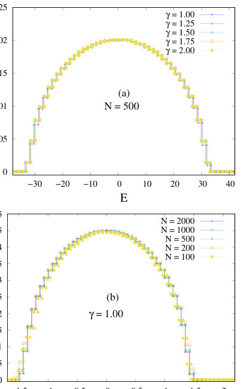
<figcaption class="paper-figure-caption"><b>Fig 1.</b> FIG. 1. Density of states (a) for different values of γ ≥1 for 5000 samples of system size N = 500. All the plots fol- low Wigner semicircle law. (b) shows the size dependence of density of states at γ = 1 for 5000 samples of system sizes N = 100, 200, 500, 1000 and 2000. If x-axis scales as E → E √</figcaption>
</figure>
<figure class="paper-figure-card">
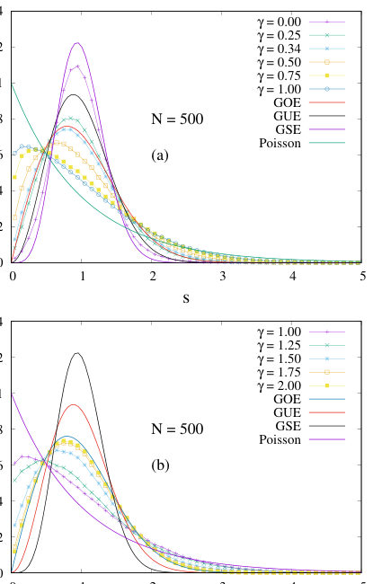
<figcaption class="paper-figure-caption"><b>Fig 2.</b> FIG. 2. Nearest neighbor spacing distribution P(s) for 5000 samples of system size N = 500. (a) depicts P(s) for 0 &lt; γ &lt; 1. It transits from GOE (at γ ∼0.34) to near Poisson limit as γ increases. (b) shows P(s) for γ &gt; 1. It comes back towards GOE limit with a further increase of γ and overlaps with Wigner distribution for γ ∼2. P(s) does not change any more if γ increases further (not shown for clarity).</figcaption>
</figure>
<figure class="paper-figure-card">
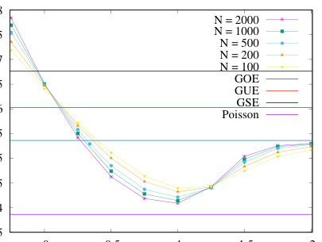
<figcaption class="paper-figure-caption"><b>Fig 3.</b> FIG. 3. Size dependence of ensemble averaged ratio ⟨˜r⟩of nearest neighbor spacing for 5000 samples of system size N = 100, 200, 500, 1000, 2000. As γ increases from zero, it goes towards the Poisson limit touching GOE limit at γ ≃0.29 for N = 2000 and γ ≃0.42 for N = 100. γ = 0 is a critical point with ⟨˜r⟩= 0.65 lying the statistics between GUE and GSE limits. ⟨˜r⟩attains maximum integrability at γ ≃1 for systems of all sizes N. But larger ones become more integrable with ⟨˜r⟩→Poisson limit. It again moves toward GOE statistics and superposes with it around γ ≳2. Here also larger systems attain at smaller values of γ. All the curves again cross with each other at γ ≃1.25 with ⟨˜r⟩= 0.44.</figcaption>
</figure>
<figure class="paper-figure-card">

<figcaption class="paper-figure-caption"><b>Fig 4.</b> FIG. 4. Size dependence of the fractal dimension D(N) 2 for 5000 samples of system size N = 100, 200, 500, 1000, 2000. At γ = −0.25, the system is maximally delocalized with D(N) 2 → 1. At this point, delocalization increases, as N increases. The eigenstates become multifractal with increasing γ and they reach a complete localization D(N) 2 = 0 around γ ≃2. As the system size N increases, localisation is attained at a smaller value of γ. With a further increment of γ, the eigenstates remain localized. All the curves for any system size intersect at γ ≃0.57 with D(N) 2 ≃0.38.</figcaption>
</figure>
<figure class="paper-figure-card">
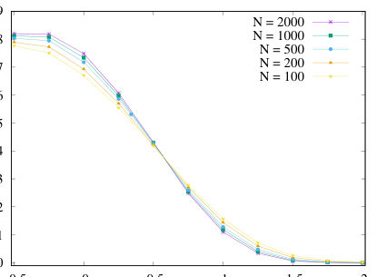
<figcaption class="paper-figure-caption"><b>Fig 5.</b> Fig. 4 for q = 2 only. It shows that with increasing γ, the localization in eigenstates increases and they become completely localized around γ ≃2 for any system size. The size dependence in Fig. 4 depicts that eigenstates of larger systems localize at smaller γ, suggesting that for a system with N →∞, localization (D2 = 0) is attained at γ →1. The eigenstates remain localized for further increment of γ, i.e., D(N) 2 never goes again towards the Wigner-Dyson limit, unlike the spectral properties of our IH ensemble. The size dependence in Fig. 4 also indicates that increasing system size N leads D(N) 2 towards GOE- limit at γ = 0. The value of D(N) 2 maximizes (∼1) at γ = −0.25 for any size...</figcaption>
</figure>
</div>

<p><strong>Summary.</strong> This paper analyzes a 1D random matrix model with inhomogeneous hopping to study the transition from chaotic to integrable quantum behavior. Using the Integrable Matrix Theory, the authors estimate conserved charges and show that the count of these charges provides a quantitative measure of integrability across this crossover. This work links spectral statistics and localization measures directly to fundamental concepts in quantum integrability.</p>
<p><strong>Why it may be interesting.</strong> The connection drawn between counting conserved quantities (a hallmark of integrability) and measurable spectral/localization properties provides a powerful diagnostic tool for understanding quantum dynamics in complex systems, relevant to many-body physics.</p>
<details>
<summary>Detailed structure</summary>
<p><strong>Main problem.</strong> The study investigates how conserved charges characterize the crossover between chaotic and integrable regimes in a one-dimensional quantum system.</p>
<p><strong>Main result.</strong> The number of estimated conserved charges, derived from the Integrable Matrix Theory (IMT), serves as a quantitative measure for the degree of quantum integrability across this transition.</p>
<p><strong>Method.</strong> The authors employ the IMT framework to estimate conserved charges by analyzing recurrence relations involving matrix elements and eigenvalues of the system's Hamiltonian.</p>
<p><strong>Model / system.</strong> The model is a single-particle system on a 1D lattice with inhomogeneous nearest neighbor hopping, described by an IH random matrix ensemble. The Hamiltonian depends on a tunable parameter $\gamma$ that controls the transition between regimes.</p>
<p><strong>Key observables.</strong> Number of conserved charges ($n$), spectral statistics (Nearest Neighbor Spacing Distribution $P(s)$), Inverse Participation Ratio ($ ext{IPR}$), and Fractal Dimension ($D_q$).</p>
<p><strong>Important parameters / regimes.</strong> The tuning parameter $\gamma$ controls the crossover, ranging from chaotic to integrable limits. The system size $N$ is also a critical factor.</p>
<p><strong>Assumptions / limitations.</strong> The analysis relies on extending the IMT framework to systems with inhomogeneous hopping and assumes that the number of conserved charges can be reliably estimated via convergence rates ($\eta$) or slope analysis ($\Delta\gamma$).</p>
<p><strong>Figures summary.</strong> Figures illustrate the Density of States collapsing onto the Wigner semicircle law, transitions in spectral statistics between GOE/Poisson limits, increasing eigenstate localization ($D_q$), and the dependence of $n/N$ on $\gamma$.</p>
<p><strong>Paper structure.</strong> The paper first introduces the IH model and its Hamiltonian structure. It then details the methodology using IMT to estimate conserved charges by analyzing convergence rates ($\eta$). Finally, it analyzes how these charges, alongside spectral statistics and localization measures, track the crossover from chaotic ($\gamma 	o 0$) to integrable ($\gamma > 1$) behavior.</p>
</details>
<details>
<summary>Abstract</summary>
<p>Quantum integrability in a system is characterized by a large number of conserved charges. However, finding the conserved charges in a generic quantum system is highly challenging. The integrable matrix theory provides a unified framework to obtain the conserved charges in a certain class of systems. We demonstrate this framework in case of a single-particle system on a 1D finite-sized lattice with inhomogeneous nearest neighbor hopping to study the statistical properties of the system across its chaotic--integrable crossover from the perspective of the conserved charges. The eigenspectrum of our random matrix model is studied first. We then estimate the conserved charges and find their properties throughout the chaotic to integrable transition of the system. We calculate the number of conserved charges across this crossover and observe that it is nearly equal to the size of the system at its integrable limit. Our result suggests that the number of conserved charges, estimated using the integrable matrix theory, can be a measure of quantum integrability.</p>
</details>
<p><sub><a href="#top">↑ back to top</a></sub></p>

<p><a id="paper-2606.12161"></a></p>
<h3 id="path-convergence-in-diffusion-models"><a href="http://arxiv.org/abs/2606.12161v1">Path convergence in diffusion models</a></h3>
<p><strong>Authors:</strong> Roi Holtzman, Roman Beauvallet, Werner Krauth<br>
<strong>Type:</strong> theory · <strong>Category:</strong> statistical mechanics · <strong>PDF:</strong> <a href="https://arxiv.org/pdf/2606.12161v1">https://arxiv.org/pdf/2606.12161v1</a><br>
<strong>Analysis basis:</strong> full PDF text, analyzed in chunks
<strong>Topic relevance:</strong> <code>Keldysh / 2PI / non-Gaussian methods</code> <strong>1/5</strong> · <code>driven-dissipative phase transition</code> <strong>1/5</strong> · <code>methods for driven-dissipative</code> <strong>1/5</strong> · <code>non-equilibrium dynamics</code> <strong>1/5</strong> · <code>non-equilibrium universality</code> <strong>1/5</strong></p>
<div class="figure-strip-hint">↔ Scroll figures horizontally</div>
<div class="paper-figures-scroll">
<figure class="paper-figure-card">
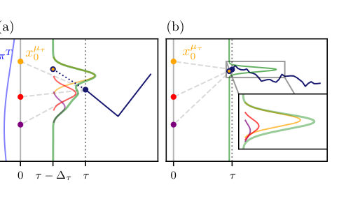
<figcaption class="paper-figure-caption"><b>Fig 1.</b> Fig. 1: Backward path construction. (a): At finite ∆τ, the distribution of xτ−∆τ starting at xτ is given by a sum of p reweighted Gaussians (in green). Algorithm 3 (backward-construction) samples the pattern µτ as the end- point xµτ 0 of a Gaussian bridge for xτ−∆τ . (b): For small ∆τ, the p Gaussians of (a) merge into a single Gaussian (see Alg. 4).</figcaption>
</figure>
<figure class="paper-figure-card">
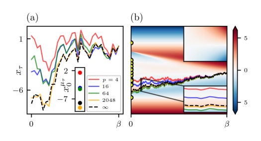
<figcaption class="paper-figure-caption"><b>Fig 2.</b> Fig. 2: Path convergence, velocity fields in our test case for β = 30. (a): Discrete backward paths for differ- ent p under identical random elements (ητ, γτ), from Alg. 3 (backward-construction). Endpoints xµτ 0 are indicated for τ = 6. (b): Continuous backward paths (∆τ = 0.01) from Alg. 4, with velocity field for p = 16. Upper inset: velocity field for p = ∞. Lower inset: Closeup.</figcaption>
</figure>
<figure class="paper-figure-card">
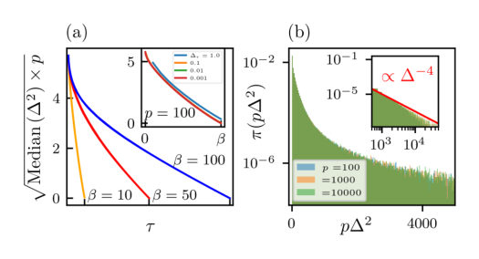
<figcaption class="paper-figure-caption"><b>Fig 3.</b> Fig. 3: Convergence of paths for our test case with Alg. 4 (backward-construction-dt). (a) Median of p</figcaption>
</figure>
<figure class="paper-figure-card">
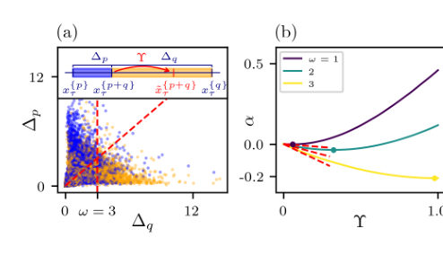
<figcaption class="paper-figure-caption"><b>Fig 4.</b> Fig. 4: Extrapolation for sets {p} and {q} of p patterns joint into a set {p + q} (test case, τ = 3). (a): Scatter plot for direction for x{∞} τ with respect to x{p+q} τ (orange dots: x{∞} τ towards x{q} τ ; blue dots: x{∞} τ towards x{p} τ ). (b): Change α of difference with x{∞} τ as a function of Υ with linear approx- imation indicated (see eq. (26)).</figcaption>
</figure>
</div>

<p><strong>Summary.</strong> This paper investigates the theoretical concept of path convergence in diffusion models used to bridge a known reference distribution to a target distribution defined only by a finite set of patterns. By analyzing how paths converge as the number of patterns increases, the authors propose and demonstrate an extrapolation algorithm that allows for estimating properties corresponding to an infinite number of samples. This work provides a mathematical framework for generalization in density estimation.</p>
<p><strong>Why it may be interesting.</strong> The mathematical machinery developed for analyzing path convergence and extrapolation directly relates to understanding how physical systems described by limited data can be generalized or extrapolated using modern generative models, which has implications across statistical physics.</p>
<details>
<summary>Detailed structure</summary>
<p><strong>Main problem.</strong> The paper analyzes path convergence when constructing interpolating paths between a target distribution (known only via $p$ patterns) and a reference distribution using diffusion model formalism.</p>
<p><strong>Main result.</strong> Path convergence is shown to allow for extrapolation towards the infinite pattern limit ($p=\infty$), providing a strategy for density estimation and generalization beyond the available samples.</p>
<p><strong>Method.</strong> The authors develop algorithms for symmetric, forward, and backward path construction in imaginary time, analyzing how these paths converge as $p$ increases.</p>
<p><strong>Model / system.</strong> The framework uses diffusion models to connect patterns $\{x_{\mu}^0\}$ of a target distribution $\pi_T$ to samples $x_eta \sim \pi_R$. The analysis is initially performed in the free-particle case using path integrals derived from statistical mechanics.</p>
<p><strong>Key observables.</strong> Path convergence scale ($1/\sqrt{p}$), mean square deviation, and the change in distance upon extrapolation ($\langle |	ilde{x}_{p+q}^	au(Y) - x_\infty^	au| 
angle - \langle |x_{p+q}^	au - x_\infty^	au| 
angle$).</p>
<p><strong>Important parameters / regimes.</strong> Number of patterns ($p$), time step ($\Delta	au$), and the limit $p 	o \infty$.</p>
<p><strong>Assumptions / limitations.</strong> The analysis focuses on establishing convergence and extrapolation strategies, noting that the core development is a proof-of-concept for generalization.</p>
<p><strong>Figures summary.</strong> Figures illustrate path construction (finite vs. small $\Delta	au$), show path convergence by comparing discrete paths ($p$) to continuous limits ($p=\infty$), and demonstrate successful extrapolation using two sets of patterns ($\{p\}$ and $\{q\}$).</p>
<p><strong>Paper structure.</strong> The paper systematically introduces the path integral formalism, details three construction algorithms (symmetric, forward, backward), analyzes the convergence behavior in the limit $p 	o \infty$, and concludes with a proof-of-concept extrapolation algorithm.</p>
</details>
<details>
<summary>Abstract</summary>
<p>We discuss diffusion-model paths interpolating between a target distribution known only through p patterns and a reference distribution that can be sampled. These interpolating paths can be constructed symmetrically or else in forward direction (often referred to as a "noising") from the target patterns to the reference distribution or in backward direction (as a "denoising") from the reference distribution to the patterns. For backward paths with identical diffusion noise, we consider the path convergence in number of patterns p towards the path for infinitely many patterns. In a one-dimensional test case, we show that this convergence is on a scale 1/sqrt(p), but with infinite mean square deviation. We demonstrate that the path convergence allows for extrapolation towards the p=infinity path which samples the target distribution. We provide a proof-of-concept extrapolation algorithm and propose the convergence and extrapolation of paths as a possible strategy for density estimation and generalization. We illustrate all our algorithms through pseudo-codes and provide Python implementations.</p>
</details>
<p><sub><a href="#top">↑ back to top</a></sub></p>

<p><a id="paper-2606.12058"></a></p>
<h3 id="phase-transitions-in-attention-a-bayesian-theory-of-copy-head-emergence"><a href="http://arxiv.org/abs/2606.12058v1">Phase Transitions in Attention: A Bayesian Theory of Copy Head Emergence</a></h3>
<p><strong>Authors:</strong> Itay Lavie, Kirsten Fischer, Andrey Lekov, Frederic Van Maele, Zohar Ringel, Moritz Helias<br>
<strong>Type:</strong> theory · <strong>Category:</strong> disordered systems and neural networks · <strong>PDF:</strong> <a href="https://arxiv.org/pdf/2606.12058v1">https://arxiv.org/pdf/2606.12058v1</a><br>
<strong>Analysis basis:</strong> full PDF text, analyzed in chunks
<strong>Topic relevance:</strong> <code>driven-dissipative phase transition</code> <strong>1/5</strong> · <code>methods for driven-dissipative</code> <strong>1/5</strong> · <code>non-equilibrium dynamics</code> <strong>1/5</strong> · <code>non-equilibrium universality</code> <strong>1/5</strong></p>
<div class="figure-strip-hint">↔ Scroll figures horizontally</div>
<div class="paper-figures-scroll">
<figure class="paper-figure-card">
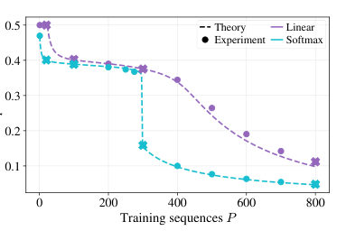
<figcaption class="paper-figure-caption"><b>Fig 1.</b> Figure 1: Copy head formation unfolds in multiple stages, with qualitatively distinct behavior for linear and softmax attention. Left: Attention patterns for linear (purple) and softmax (blue) attention from the trained model (top per color) and theory (bottom per color) for different amounts of training data P. (i) P = 20: the attention layer does not contribute in the linear case and softmax attention remains at its uniform pooling default; (ii) P = 100: after the second-order phase transition for linear attention, all tokens are attended to equally; (iii) P = 300: the copy pattern begins to appear; (iv) P = 800: it sharpens into the correct shift-by-one pattern. Right: Loss per token as...</figcaption>
</figure>
<figure class="paper-figure-card">
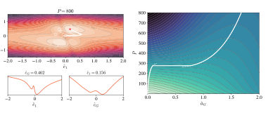
<figcaption class="paper-figure-caption"><b>Fig 2.</b> Figure 2: Different topologies of actions Slin(ˆc1, ˆcG) and Ssoftmax(ˆaG; P). Linear attention (left): Contour plots of action at increasing dataset size P, corresponding to the attention stages (i), (ii), (iv) in Fig 1. From left to right: (i) the action has a single minimum at the origin - the model does not use the context; (ii) after the second-order phase transition, a minimum at nonzero ˆc1 emerges, corresponding to uniform pooling attention where the model attends to the entire context equally; (iv) finally, the landscape reorganizes and large ˆcG is preferred. The minimum deepens and splits, and two possible solutions are formed, but one is preferred and leads to lower loss values....</figcaption>
</figure>
<figure class="paper-figure-card">
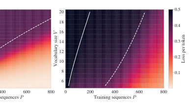
<figcaption class="paper-figure-caption"><b>Fig 3.</b> Figure 3: Linear attention exhibits a second-order phase transition and subsequent gradual crossover. Left: Scalar order parameters ˆc1, ˆcG measured from models trained with Adam (circles) and SGLD (diamonds) compared to the theory predictions (dashed) as a function of the amount of training data or sample complexity P. At the phase transition, ˆc1 rises sharply from zero, while ˆcG remains near zero; beyond P ≈400, ˆc1 declines while ˆcG rises, marking the crossover from uniform pooling to copy attention; theory tracks the empirically observed behavior closely. Center and right: Phase diagram of copy subcircuit emergence. We show the loss per token as a function of training se- quences P...</figcaption>
</figure>
<figure class="paper-figure-card">
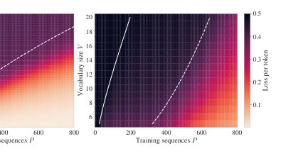
<figcaption class="paper-figure-caption"><b>Fig 4.</b> Fig. 2 (left panels) illustrates the topology of the action S(ˆc1, ˆcG) for different P values. At P &lt; P ∗ ˆc1, the action has a single minimum at the origin. At P = Pˆc1 ≈23, a new minimum at nonzero ˆc1 emerges continuously and the sections reveal the characteristic flat-then-tilted shape of a Landau- type second-order phase transition (see App. A); enabling the model to exploit in-context unigram statistics. Beyond this, as P increases toward PˆcG ≈322, the saddle at the origin becomes a maximum, driving ˆcG away from zero and the crossover from context pooling to copying. Critically, this reorganization is not a second phase transition: the symmetry is already broken at Pˆc1.</figcaption>
</figure>
<figure class="paper-figure-card">
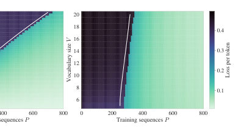
<figcaption class="paper-figure-caption"><b>Fig 5.</b> Figure 4: Softmax attention exhibits a first-order phase transition. Left: Scalar order parameters ˆa1, ˆaG measured from models trained with Adam (circles) and SGLD (diamonds) compared to the theory predictions (dashed lines) as a function of the amount of training data or sample complexity P. At the phase transition the value of ˆaG jumps marking a first-order phase transition. Note that the dots corresponding to SGLD are often covered by the diamonds corresponding to Adam due to their precise agreement. Center and right: Phase diagram of copy subcircuit emergence. We show the loss per token as a function of training sequences P vs. sequence length L for V = 5 fixed (center), and vs....</figcaption>
</figure>
</div>

<p><strong>Summary.</strong> This work applies statistical mechanics concepts, specifically phase transition theory, to understand how transformer attention mechanisms learn structured circuits. By deriving an effective action for both softmax and linear attention, the authors predict that softmax exhibits a sharp first-order transition while linear attention shows a smoother second-order evolution when learning copying behavior.</p>
<p><strong>Why it may be interesting.</strong> It provides a rigorous theoretical physics lens (phase transitions) to explain emergent computational capabilities in deep learning models, drawing parallels to critical phenomena studied in condensed matter theory.</p>
<details>
<summary>Detailed structure</summary>
<p><strong>Main problem.</strong> The paper aims to provide a first-principles theoretical account of how specific, structured attention patterns (like the 'copy subcircuit') emerge abruptly during the training of transformer models.</p>
<p><strong>Main result.</strong> It distinguishes between softmax and linear attention mechanisms, finding that softmax exhibits a sharp, first-order phase transition upon learning the copy circuit, while linear attention shows a smoother second-order transition followed by crossover.</p>
<p><strong>Method.</strong> The authors develop a Bayesian theory of feature learning, reducing the high-dimensional posterior over the attention matrix to a low-dimensional order parameter space governed by an effective action.</p>
<p><strong>Model / system.</strong> The system analyzed is a single-layer softmax or linear attention network trained on a synthetic copy task. The analysis uses concepts from statistical physics, treating learning dynamics as phase transitions in the model's energy landscape.</p>
<p><strong>Key observables.</strong> Order parameters ($\hat{c}_1, \hat{c}_G$ or $\hat{a}_1, \hat{a}_G$), loss per token, and the transition order (first-order vs. second-order).</p>
<p><strong>Important parameters / regimes.</strong> Training data amount ($P$), sequence length ($L$), model dimension ($d_{	ext{model}}$), and the specific attention kernel (softmax vs. linear).</p>
<p><strong>Assumptions / limitations.</strong> The analysis relies on reducing the posterior to a low-dimensional order parameter space, using saddle-point approximations, and assuming an ansatz for the attention matrix structure.</p>
<p><strong>Figures summary.</strong> Figures illustrate the difference in transition behavior: softmax shows sharp jumps (first-order) vs. linear showing gradual changes (second-order/crossover) as data $P$ increases.</p>
<p><strong>Paper structure.</strong> The paper builds from deriving a Bayesian theory for attention, reducing it to an effective action over order parameters, and then applying this framework to quantitatively distinguish the phase transition orders between softmax and linear attention mechanisms.</p>
</details>
<details>
<summary>Abstract</summary>
<p>Attention is the key mechanism underlying in-context learning in transformers, and attention patterns have been observed empirically to emerge abruptly during training. We present a Bayesian theory of feature learning in attention; we then focus on how the copy subcircuit in the first layer of an induction head is learned by analyzing a single-layer softmax attention network trained on a copy task. We derive a closed-form posterior over the attention matrix and reduce it to a low-dimensional order parameter space. This reduction reveals a phase transition in the amount of training data, which we verify using both Bayesian sampling and standard training with Adam. We contrast our results with linear attention and find that softmax attention exhibits a \emph{first-order phase transition} while in linear attention an initial \emph{second-order phase transition} is followed by a smooth, continuous evolution toward the structured attention pattern (\emph{crossover}). Our work provides a first-principles theoretical account of the abrupt emergence of the copy subcircuit, reminiscent of the one observed in training large language models.</p>
</details>
<p><sub><a href="#top">↑ back to top</a></sub></p>

<p><a id="paper-2606.12241"></a></p>
<h3 id="superconductivity-in-the-pressure-amorphized-topological-insulator-crpmath771math"><a href="http://arxiv.org/abs/2606.12241v1">Superconductivity in the pressure-amorphized topological insulator CrP$_4$</a></h3>
<p><strong>Authors:</strong> Chutong Zhang, Xiangzhuo Xing, Na Zuo, Bowen Zheng, Bin Li, Jiajia Feng, Xiaolei Yi, Yan Meng, Xiaoran Zhang, Bingchao Yang, Chao Wang, Xin Chen, Yongsheng Zhang, Xiaofeng Xu, Xiaobing Liu<br>
<strong>Type:</strong> both · <strong>Category:</strong> strongly correlated electrons · <strong>PDF:</strong> <a href="https://arxiv.org/pdf/2606.12241v1">https://arxiv.org/pdf/2606.12241v1</a><br>
<strong>Analysis basis:</strong> full PDF text, analyzed in chunks
<strong>Topic relevance:</strong> <code>Keldysh / 2PI / non-Gaussian methods</code> <strong>1/5</strong> · <code>Kondo &amp; dissipative impurity</code> <strong>1/5</strong> · <code>analog quantum simulation</code> <strong>1/5</strong> · <code>driven-dissipative phase transition</code> <strong>1/5</strong></p>
<div class="figure-strip-hint">↔ Scroll figures horizontally</div>
<div class="paper-figures-scroll">
<figure class="paper-figure-card">

<figcaption class="paper-figure-caption"><b>Fig 1.</b> FIG. 1. Structural and physical properties of CrP4 at ambient conditions. (a) Crystal structure of CrP4, visualized using VESTA software [53]. (b) Powder XRD pattern obtained with Cu Kα radiation. The solid black line represents the Rietveld refinement. Inset: photograph of a typical CrP4 single crystal. (c)</figcaption>
</figure>
<figure class="paper-figure-card">
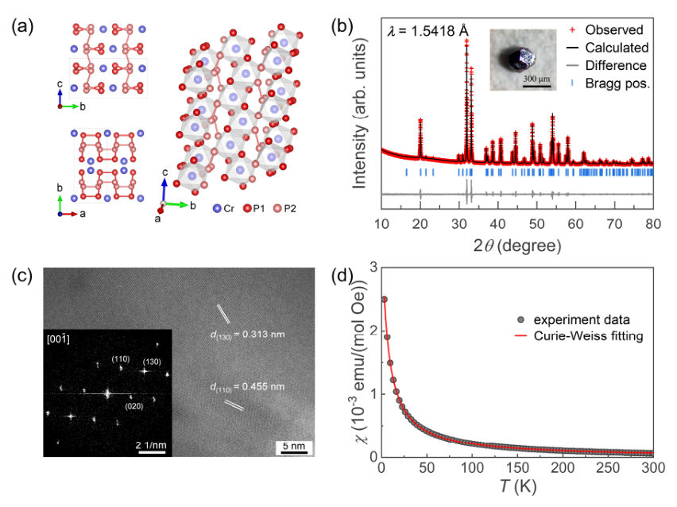
<figcaption class="paper-figure-caption"><b>Fig 2.</b> Figure 1(b) presents the typical XRD pattern, that all the characteristic peaks can be well indexed to a monoclinic structure with the space group C2/c, in good agreement with previous report [28]. Rietveld refinements yields the lattice parameters of a = 5.19165 Å, b= 10.76071 Å, c = 5.77036 Å, and β = 110.6455°. EDX analysis indicates a uniform distribution of Cr and P elements in the produced crystals, with an atomic ratio of ~1:4 (19.91:80.09) (Fig. S2 [42]). Figure 1(c) illustrates the</figcaption>
</figure>
<figure class="paper-figure-card">
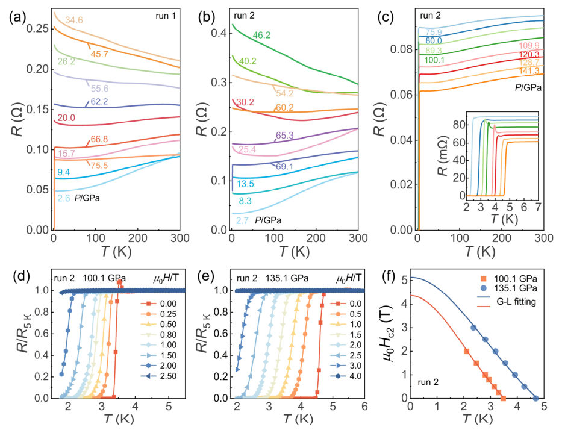
<figcaption class="paper-figure-caption"><b>Fig 3.</b> FIG. 2. Temperature-dependent resistance of CrP4 under pressure. (a) Resistance evolution with pressure up to 75.5 GPa in run 1. (b) and (c) Evolution of resistance with pressure up to 141.3 GPa in run 2. Inset in (c) magnifies the superconducting transition region. (d) and (e) Resistance versus temperature under various magnetic fields at 100.1 GPa and 135.1 GPa in run 2. (f) Upper critical fields μ0Hc2(T) as a function of temperature at different pressures. Tc is defined as the onset of the resistance transition, determined by the intersection of the extrapolated normal-state resistance and the steep transition curve. Solid lines represent fits to the G-L equation.</figcaption>
</figure>
<figure class="paper-figure-card">
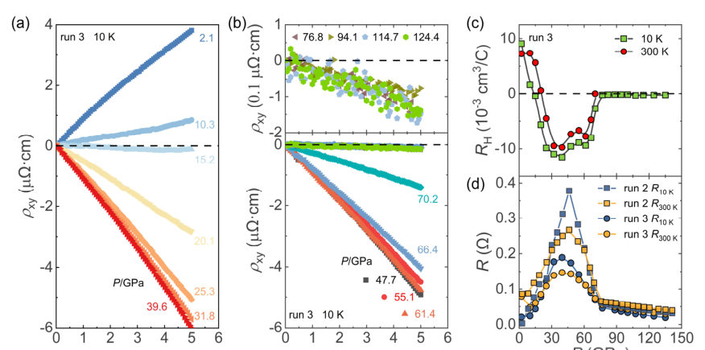
<figcaption class="paper-figure-caption"><b>Fig 4.</b> FIG. 3. Hall effect of CrP4 at 10 K under pressure. (a) and (b) Plots of Hall resistivity ρxy versus magnetic field H under various pressures. (c) Pressure dependence of the Hall coefficient RH, displaying a sign change from positive to negative at the critical pressure of around 15 GPa. (d) The resistance at 10 K and 300 K as a function of pressure for run 2 and run 3. The horizontal dashed lines in (a)-(c) serve as guides to the eye, representing the zero baseline.</figcaption>
</figure>
<figure class="paper-figure-card">
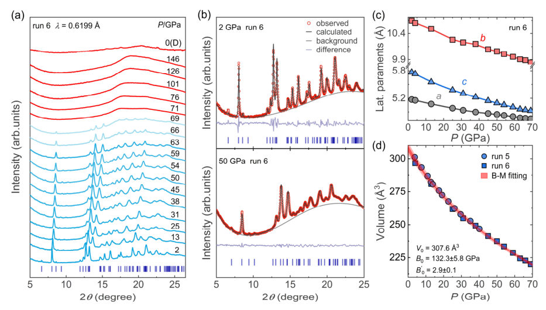
<figcaption class="paper-figure-caption"><b>Fig 5.</b> FIG. 4. In-situ high-pressure XRD of CrP4. (a) XRD patterns at various pressures up to 146 GPa in run 6. Topmost pattern, labelled as 0(D), taken after pressure release to ambient conditions. (b) Representative Rietveld refinement results for XRD patterns at 2 GPa (up) and 50 GPa (bottom), respectively. (c) Refined lattice parameters (a, b, and c) as a function of pressure. (d) Pressure dependence of the derived cell volume V. Solid red line represents the fit of the experimental data to the third-order B-M equation of state.</figcaption>
</figure>
</div>

<p><strong>Summary.</strong> This work reports the discovery of superconductivity in pressure-amorphized $  ext{CrP}_4$, linking it to a complex sequence of electronic and topological phase transitions. By combining high-pressure experiments with DFT calculations, the authors establish that structural disorder can induce unconventional superconducting states in topologically rich materials.</p>
<p><strong>Why it may be interesting.</strong> The study provides a model system where extreme external tuning (pressure) drives multiple competing quantum phenomena—topological transitions, magnetic instability, and superconductivity—in an amorphous state, which is highly relevant for understanding emergent quantum states in disordered materials.</p>
<details>
<summary>Detailed structure</summary>
<p><strong>Main problem.</strong> The study investigates the complex interplay between superconductivity, magnetism, and nontrivial band topology in chromium-based materials under extreme pressure.</p>
<p><strong>Main result.</strong> Superconductivity was observed in the pressure-amorphized $    ext{CrP}_4$, establishing it as a first example of a Cr-based amorphous superconductor. The material exhibits multiple quantum phase transitions, including topological changes and structural amorphization, all correlated with superconductivity onset.</p>
<p><strong>Method.</strong> The research combines high-pressure experimental measurements (resistivity, Hall effect, XRD) with advanced theoretical calculations using DFT to map out the electronic structure evolution.</p>
<p><strong>Model / system.</strong> The system is $ ext{CrP}_4$, a transition-metal tetraphosphide. The investigation spans both its crystalline phase and an amorphous state induced by high pressure (up to 141.3 GPa). Theoretical modeling incorporates relativistic effects and spin-orbit coupling.</p>
<p><strong>Key observables.</strong> Superconducting critical temperature ($T_c$), Hall coefficient sign change, resistance evolution ($
ho(P)$), and $\mathbb{Z}_2$ topological invariants.</p>
<p><strong>Important parameters / regimes.</strong> Pressure (up to 141.3 GPa), Temperature, Magnetic field, Quantum phase transition points ($\sim 15 	ext{ GPa}$ and $\sim 70 	ext{ GPa}$).</p>
<p><strong>Assumptions / limitations.</strong> The superconducting pairing mechanism is assumed to be unconventional, likely mediated by spin fluctuations or structural disorder.</p>
<p><strong>Figures summary.</strong> Figures summarize the temperature-pressure phase diagram showing multiple transitions (metallic $  o$ semiconducting-like $    o$ metallic) and topological changes in both crystalline and amorphous regimes.</p>
<p><strong>Paper structure.</strong> The paper follows a progression from ambient characterization to high-pressure transport measurements, theoretical mapping of topological invariants ($\mathbb{Z}_2$), and finally constructing a comprehensive T-P phase diagram linking structural disorder to superconductivity.</p>
</details>
<details>
<summary>Abstract</summary>
<p>The interplay among superconductivity, magnetism, and nontrivial band topology represents one of the most compelling frontiers in condensed matter physics. The exploration of novel superconductivity in 3d transition-metal compounds, particularly the rare Cr-based systems containing strongly magnetic Cr ions, has long attracted attention owing to their unconventional pairing mechanisms that challenge conventional wisdom. Yet, Cr-based superconductors remain scarce, especially those possessing nontrivial topological character, underscoring the urgent need to uncover new members. Here we report the observation of superconductivity in pressure-amorphized Cr-based topological insulator CrP$_4$. Upon compression, CrP$_4$ undergoes an anomalous quantum phase transition from a metallic to a semiconducting-like state at around 15 GPa, driven by significant changes in the electronic structure. At approximately 70 GPa, re-metallization with superconductivity occurs alongside an irreversible amorphization. The superconducting transition temperature Tc increases monotonically with pressure, reaching 4.8 K at 141.3 GPa. Furthermore, theoretical calculations predict multiple topological phase transitions from a strong topological insulator to a trivial state and finally back to a strong topological state under pressure. Our study not only establishes CrP$_4$ as the first Cr-based amorphous superconductor but also opens a new paradigm for exploring superconducting and topological properties in amorphous materials.</p>
</details>
<p><sub><a href="#top">↑ back to top</a></sub></p>

<p><a id="paper-2606.12060"></a></p>
<h3 id="the-quantum-harmonic-oscillator-and-the-real-hilbert-space"><a href="http://arxiv.org/abs/2606.12060v1">The quantum harmonic oscillator and the real Hilbert space</a></h3>
<p><strong>Authors:</strong> Sergio Giardino<br>
<strong>Type:</strong> theory · <strong>Category:</strong> other · <strong>PDF:</strong> <a href="https://arxiv.org/pdf/2606.12060v1">https://arxiv.org/pdf/2606.12060v1</a><br>
<strong>Analysis basis:</strong> full PDF text, analyzed in chunks
<strong>Topic relevance:</strong> <code>correlated / nonlocal dissipation</code> <strong>1/5</strong> · <code>driven-dissipative phase transition</code> <strong>1/5</strong> · <code>methods for driven-dissipative</code> <strong>1/5</strong> · <code>non-equilibrium dynamics</code> <strong>1/5</strong></p>
<div class="figure-strip-hint">↔ Scroll figures horizontally</div>
<div class="paper-figures-scroll">
<figure class="paper-figure-card">
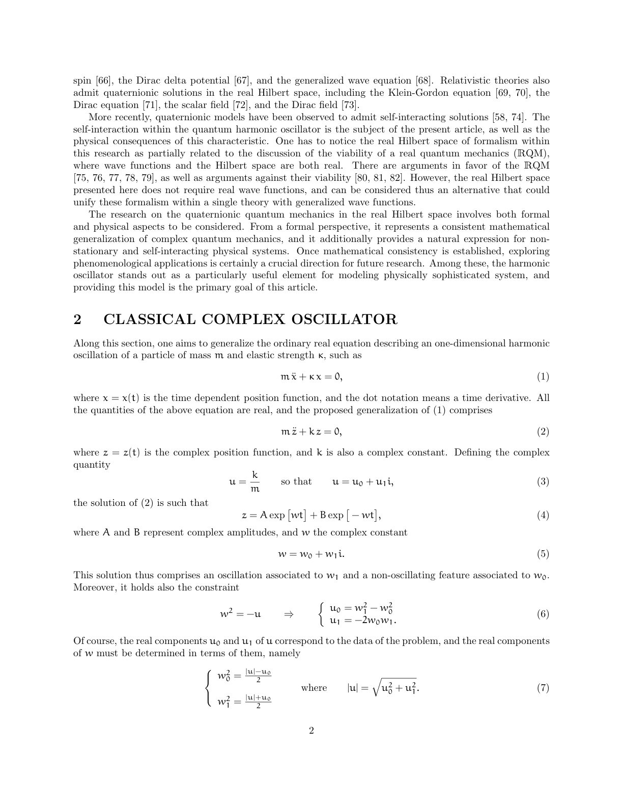
<figcaption class="paper-figure-caption"><b>Fig 1.</b> Low-resolution page preview, page 2</figcaption>
</figure>
<figure class="paper-figure-card">
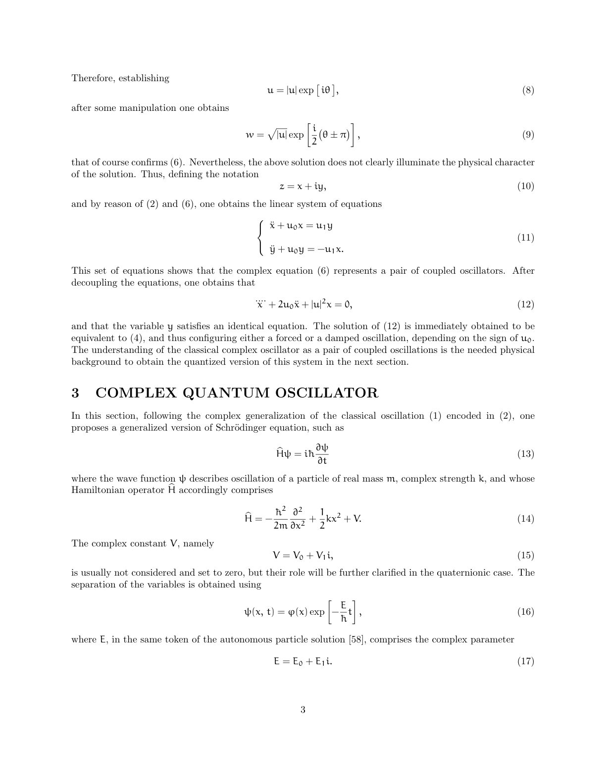
<figcaption class="paper-figure-caption"><b>Fig 2.</b> Low-resolution page preview, page 3</figcaption>
</figure>
<figure class="paper-figure-card">
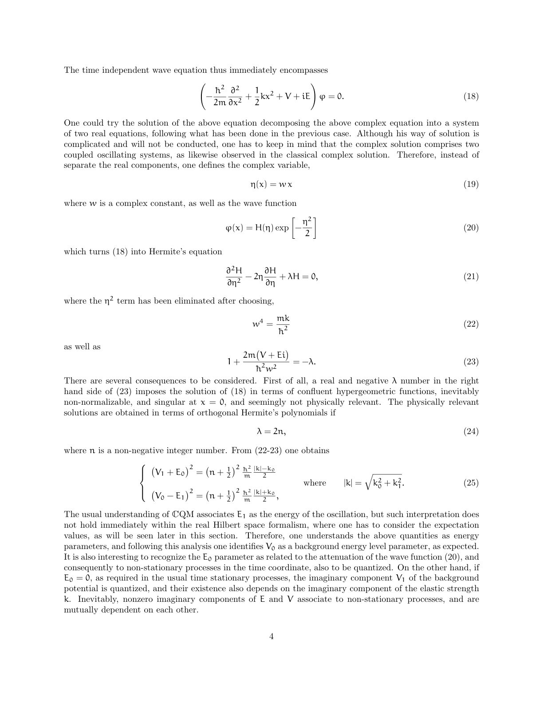
<figcaption class="paper-figure-caption"><b>Fig 3.</b> Low-resolution page preview, page 4</figcaption>
</figure>
<figure class="paper-figure-card">
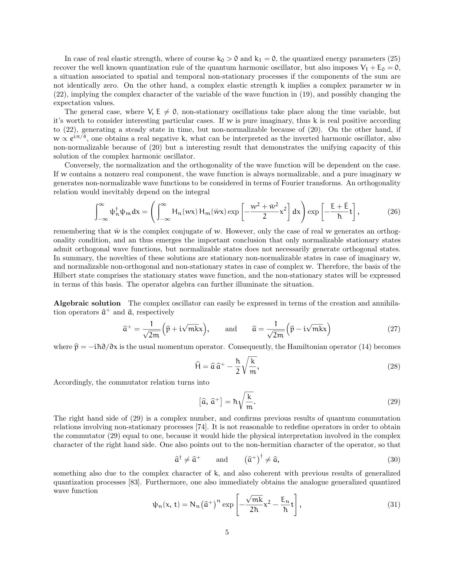
<figcaption class="paper-figure-caption"><b>Fig 4.</b> Low-resolution page preview, page 5</figcaption>
</figure>
<figure class="paper-figure-card">
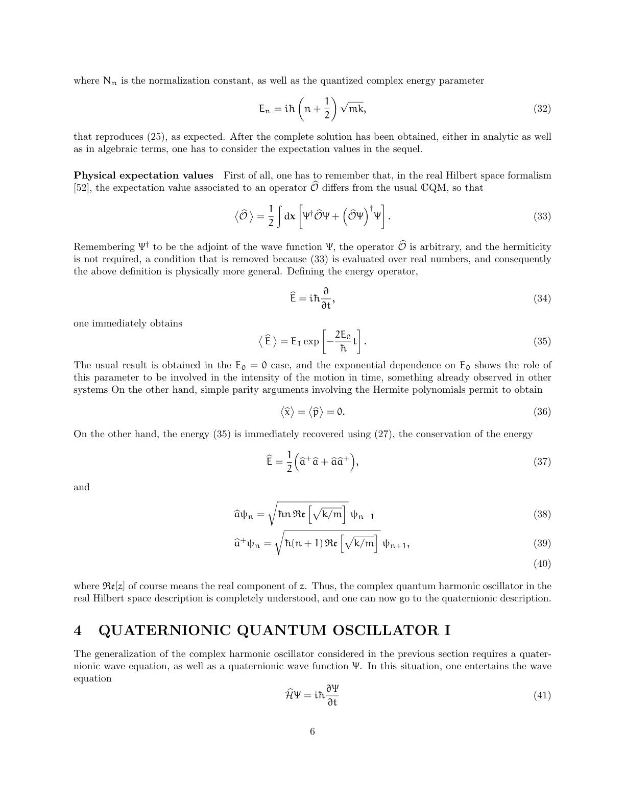
<figcaption class="paper-figure-caption"><b>Fig 5.</b> Low-resolution page preview, page 6</figcaption>
</figure>
</div>

<p><strong>Summary.</strong> This paper investigates the harmonic oscillator by extending its description from standard complex quantum mechanics into more abstract mathematical frameworks, notably using real Hilbert space and quaternionic numbers. It demonstrates that these generalizations allow for a richer description of non-stationary dynamics and self-interacting processes not captured by simpler models.</p>
<p><strong>Why it may be interesting.</strong> The extension of quantum mechanics into non-commutative algebras like quaternions or restricting it to real Hilbert spaces provides powerful mathematical tools for modeling open, dissipative, or highly structured physical systems beyond standard textbook treatments.</p>
<details>
<summary>Detailed structure</summary>
<p><strong>Main problem.</strong> The study aims to generalize the quantum harmonic oscillator by examining its behavior within increasingly complex mathematical frameworks, specifically using real Hilbert space and quaternionic numbers.</p>
<p><strong>Main result.</strong> The formalism successfully extends standard quantum mechanics to describe non-stationary processes (like damped or forced oscillations) and introduces a richer energy structure via quaternionic descriptions compared to purely complex models.</p>
<p><strong>Method.</strong> The analysis involves solving generalized Schrödinger equations, deriving expectation values in real Hilbert space, and analyzing coupled differential equations arising from the quaternionic representation.</p>
<p><strong>Model / system.</strong> The primary model is the one-dimensional harmonic oscillator. It is analyzed using Hamiltonians defined over complex variables, real Hilbert spaces (using modified expectation value definitions), and full quaternionic wave functions ($\Psi = \psi_0 + \psi_1j$).</p>
<p><strong>Key observables.</strong> Energy expectation values ($\langle \hat{E} 
angle$), quantization numbers ($N_0, N_1$), and the complex/quaternionic nature of the energy parameters ($E_0, E_1$).</p>
<p><strong>Important parameters / regimes.</strong> The elastic strength ($k$ or $K$) and potential coefficients ($V$, $U$) are key; non-zero imaginary components in these parameters signal non-stationary dynamics.</p>
<p><strong>Assumptions / limitations.</strong> The formalism assumes that the real Hilbert space approach can provide a unifying framework, even when standard normalizability conditions fail for certain complex parameter choices.</p>
<p><strong>Figures summary.</strong> Not specified by notes, but the analysis relies on deriving solutions to differential equations (e.g., Hermite's equation) and establishing quantization rules.</p>
<p><strong>Paper structure.</strong> The paper progresses from analyzing the classical/quantum oscillator in complex variables, moving to defining expectation values in a real Hilbert space context, and culminating in the most general treatment using quaternionic wave functions which yields coupled differential equations for components $\psi_0$ and $\psi_1$.</p>
</details>
<details>
<summary>Abstract</summary>
<p>The harmonic oscillator is considered within generalized frameworks using complex and quaternionic numbers. The classical oscillator is considered in terms of a complex position function, and quantum oscillators are examined in terms of complex wave functions, and in terms of quaternionic wave functions as well. Both of the quantum solutions are obtained within the real Hilbert space formalism. The results reveal the complex and quaternionic descriptions as suitable frameworks for non-stationary processes, including damped oscillations, forced oscillations, and additionally self-interacting processes that cannot be appropriately described otherwise.</p>
</details>
<p><sub><a href="#top">↑ back to top</a></sub></p>

<p><a id="paper-2606.12301"></a></p>
<h3 id="an-iterative-ising-decoder-for-quantum-error-correction-codes"><a href="http://arxiv.org/abs/2606.12301v1">An iterative Ising decoder for quantum error correction codes</a></h3>
<p><strong>Authors:</strong> Yuanqi Liu, Weilei Zeng, Peixiang Li, Yantong Liu, Guangyao Huang, Yingwen Liu, Dongyang Wang, Junjie Wu, Lingling Lao<br>
<strong>Type:</strong> theory · <strong>Category:</strong> quantum information and computing · <strong>PDF:</strong> <a href="https://arxiv.org/pdf/2606.12301v1">https://arxiv.org/pdf/2606.12301v1</a><br>
<strong>Analysis basis:</strong> full PDF text, analyzed in chunks
<strong>Topic relevance:</strong> <code>analog quantum simulation</code> <strong>1/5</strong> · <code>methods for driven-dissipative</code> <strong>1/5</strong> · <code>quantum measurements</code> <strong>1/5</strong></p>
<div class="figure-strip-hint">↔ Scroll figures horizontally</div>
<div class="paper-figures-scroll">
<figure class="paper-figure-card">
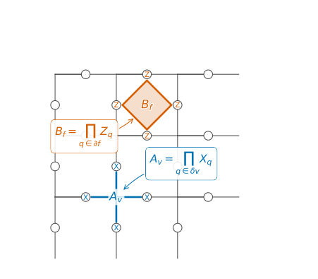
<figcaption class="paper-figure-caption"><b>Fig 1.</b> FIG. 1. Geometry of the toric code. Data qubits (circles) reside on the lattice edges. Vertex operators Av (blue) and face operators Bf (orange) represent the two types of weight-4 stabilizer generators.</figcaption>
</figure>
<figure class="paper-figure-card">
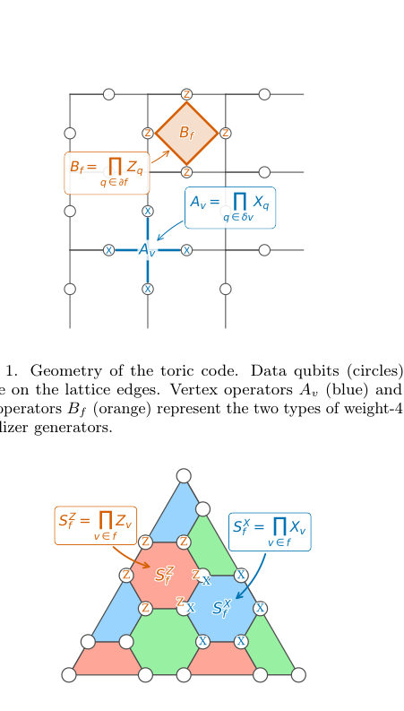
<figcaption class="paper-figure-caption"><b>Fig 2.</b> FIG. 2. Geometry of the 6.6.6 color code with a triangular boundary. Data qubits (circles) reside at the lattice vertices. Each bulk hexagonal face (red, green, or blue) defines weight-6 X- and Z-type stabilizer generators, while the truncated faces on the boundary define weight-4 generators.</figcaption>
</figure>
<figure class="paper-figure-card">
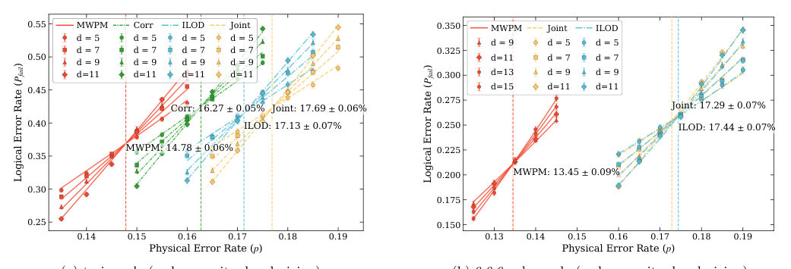
<figcaption class="paper-figure-caption"><b>Fig 3.</b> FIG. 3. Logical error rates under code-capacity depolarizing noise for (a) the toric code and (b) the 6.6.6 color code. Thresholds are listed in Table I.</figcaption>
</figure>
<figure class="paper-figure-card">

<figcaption class="paper-figure-caption"><b>Fig 4.</b> FIG. 4. Runtime scaling under code-capacity depolarizing noise for the toric code at p = 0.10, fitted as Tsolve ∼bd.</figcaption>
</figure>
<figure class="paper-figure-card">

<figcaption class="paper-figure-caption"><b>Fig 5.</b> FIG. 5. Logical error rates under phenomenological depolarizing noise (pm = p, T = d) for (a) the toric code and (b) the 6.6.6 color code. Thresholds are summarized in Table I.</figcaption>
</figure>
</div>

<p><strong>Summary.</strong> The paper introduces an Iterative Low-order Decoding (ILOD) algorithm to solve the computationally hard problem of decoding quantum error correcting codes. ILOD circumvents the exponential complexity and high-body interactions found in joint Hamiltonian formulations by iteratively solving decoupled X and Z sub-problems using Bayesian updates. This results in faster computation, better convergence for large codes, and reduced hardware resource requirements.</p>
<p><strong>Why it may be interesting.</strong> This work provides a concrete algorithmic improvement for simulating complex quantum error correction processes, which is crucial for understanding fault tolerance in physical quantum hardware architectures.</p>
<details>
<summary>Detailed structure</summary>
<p><strong>Main problem.</strong> The core problem is efficiently decoding quantum error correction (QEC) codes by mapping syndrome measurement to finding the ground state of a classical Ising Hamiltonian.</p>
<p><strong>Main result.</strong> The proposed Iterative Low-order Decoding (ILOD) algorithm significantly accelerates solving the decoding problem, restores convergence at larger code distances, and reduces hardware overhead compared to joint formulations.</p>
<p><strong>Method.</strong> ILOD alternates optimization between X- and Z-type sub-Hamiltonians, approximating complex cross-correlations using Bayesian priors that reweight couplings based on inferred error configurations.</p>
<p><strong>Model / system.</strong> The work analyzes topological stabilizer codes like the Toric code and 6.6.6 color code under depolarizing noise. The Hamiltonian complexity increases significantly with noise type (e.g., up to 10-body interactions).</p>
<p><strong>Key observables.</strong> Error thresholds ($p_{th}$), logical error rate ($  ext{p}<em solve>L$), and computational runtime scaling ($T</em> \sim b d$).</p>
<p><strong>Important parameters / regimes.</strong> Code distance ($d$), physical error rates ($p, p_m$), and the body count of interaction terms (e.g., 8-body vs. 4-body).</p>
<p><strong>Assumptions / limitations.</strong> The ILOD procedure is a heuristic optimization guided by local Nishimori relations; initial analysis assumes independent noise distributions.</p>
<p><strong>Figures summary.</strong> Figures compare logical error rates and runtime scaling for various decoding methods (ILOD, Joint) across different codes and noise models, showing ILOD's superior performance at large distances.</p>
<p><strong>Paper structure.</strong> The paper first establishes the QEC framework using Ising mapping. It then details the limitations of joint Hamiltonians due to high-order terms. The core contribution is introducing and analyzing the iterative ILOD algorithm, followed by extensive comparisons against existing methods regarding thresholds and runtime scaling.</p>
</details>
<details>
<summary>Abstract</summary>
<p>The Ising framework maps the decoding problem in quantum error correction onto ground-state optimization of a classical Hamiltonian, in which $X$-$Z$ error correlations enter as cross terms. Under phenomenological depolarizing noise, the exact joint formulation contains up to 8-body interactions for the toric code and 10-body for the $6.6.6$ color code. These high-order terms degrade solver convergence, inflate runtime, and raise the auxiliary spin overhead when embedding into native 2-body Ising hardware. In this work, we propose the iterative low-order decoding (ILOD) algorithm, which alternates between $X$- and $Z$-type sub-Hamiltonians, approximating cross-type correlations through Bayesian priors that reweight each type's couplings using the other type's inferred error configuration. This halves the maximum body count of interaction terms in the Hamiltonian, accelerating the solver, restoring convergence at larger code distances, and reducing the total spin count for 2-body embedding by a factor of $2.5$. For the toric code, ILOD attains a threshold of $4.73%$ versus $4.83%$ for the joint formulation, with the empirical runtime ratio scaling as $(0.81)^d$. For the $6.6.6$ color code, their thresholds agree within statistical uncertainty for small code distances, and ILOD remains convergent for larger distances where the joint formulation fails to converge despite a larger annealing budget.</p>
</details>
<p><sub><a href="#top">↑ back to top</a></sub></p>

<p><a id="paper-2606.12180"></a></p>
<h3 id="experimental-straintronics-in-nanotube-quantum-dots"><a href="http://arxiv.org/abs/2606.12180v1">Experimental straintronics in nanotube quantum dots</a></h3>
<p><strong>Authors:</strong> L. Huang, I. G. Rebollo, A. R. Champagne<br>
<strong>Type:</strong> experiment · <strong>Category:</strong> other · <strong>PDF:</strong> <a href="https://arxiv.org/pdf/2606.12180v1">https://arxiv.org/pdf/2606.12180v1</a><br>
<strong>Analysis basis:</strong> full PDF text, analyzed in chunks
<strong>Topic relevance:</strong> <code>Kondo &amp; dissipative impurity</code> <strong>1/5</strong> · <code>QC/QI experiment</code> <strong>1/5</strong> · <code>non-equilibrium dynamics</code> <strong>1/5</strong></p>
<div class="figure-strip-hint">↔ Scroll figures horizontally</div>
<div class="paper-figures-scroll">
<figure class="paper-figure-card">

<figcaption class="paper-figure-caption"><b>Fig 1.</b> FIG. 1. Instrumentation and SWCNT-QD transistors for quantum transport straintronics (QTS). (a) Side-view schematic of our instrumentation loaded in a low-temperature cryostat. A push screw bends slightly a very thin Si substrate, applying an in-situ mechanical strain ∆εmech to the suspended SWCNT channel. A DC circuit is used for transport measurements. (b) A tilted-SEM image (80°) of the suspended SWCNT-under-gold breakjunction in Device A1 (before electromigration). The suspension length is Lsus = 650 nm. (c) Zoom-in view of the breakjunction in (b) after electromigration. The top left inset shows the electromigration process for Device A1, and the top right inset the small scale SEM...</figcaption>
</figure>
<figure class="paper-figure-card">

<figcaption class="paper-figure-caption"><b>Fig 2.</b> FIG. 2. Mechanically-tunable Coulomb diamond ∆VG shifts. (a)-(b) dI/dVB −VB −VG data from Device A1 at ∆εmech = 0 and 0.4 %, respectively. (c) Outline of the Coulomb diamond 2 extracted from (a)-(b) and similar data at ∆εmech ranging from 0 (blue) and 0.5 % (red). The centers of the diamonds are labelled with circle markers. (d) The ∆VG shift of di- amonds 1 (squares), 2 (circles), 3 (triangles), 4 (downward triangles) versus ∆εmech. The right-side axis shows the cor- responding Fermi energy shift, ∆µG = αe∆VG. The dashed line is a linear fit.</figcaption>
</figure>
<figure class="paper-figure-card">

<figcaption class="paper-figure-caption"><b>Fig 3.</b> FIG. 3. Mechanical tuning of charge doping in SWCNT-QDs. (a)-(b) dI/dV −VB −∆εmech data from Device A2 for forward (increasing) and reverse (decreasing) ∆εmech sweeps, respec- tively. The labels N and N +1 refer to the average number of electrons on the QD. (c) The main panel shows ∆µG−∆εmech for Device A2. The inset shows dI/dV −VB data extracted from (a) at the location of the vertical cuts highlighted in dark blue, light blue, and red, respectively. (d) Same as (a), but for Device B.</figcaption>
</figure>
<figure class="paper-figure-card">

<figcaption class="paper-figure-caption"><b>Fig 4.</b> FIG. 4. Physical origin of mechanical gating in our SWCNT transistors. (a) Diagram showing the geometry of previously reported mechanically-controlled QDs (mechanical break-junctions). The QD was affixed to one metal contact (e.g. source) while free to move a distance ∆x away from another metal contact (e.g. drain). (b) The expected change, based on the geometry in (a), in the Coulomb diamond shape for Device A1 between ∆x = 0 ˚A (measured, blue) and ∆x = 4 ˚A (calculated, red). The right-hand side diamonds show that the actual measured diamonds at ∆x = 0 (blue) and 4 (red) ˚A did not change shape. (c) The measured slopes (solid markers) of the diamonds in Device A2 at various ∆x. The solid...</figcaption>
</figure>
<figure class="paper-figure-card">

<figcaption class="paper-figure-caption"><b>Fig 5.</b> Figure 4 of the main text and the related discussion demonstrate that the mechanical gating observed in our experiments originates from strain-dependent SWCNT band structure mod- ifications rather than from QD capacitance changes. In this section, we present additional data and analysis confirming that our devices are fully clamped mechanically and exhibit no significant capacitance change over a broad strain range. We then describe the theoretical model used to reproduce the transport behavior of our SWCNT devices. In addition to the theoretical calculation of the transport spectrum in Device A shown in Fig. 4(g), we show below the theoretical calculation results for Device B.</figcaption>
</figure>
</div>

<p><strong>Summary.</strong> This paper demonstrates that uniaxial mechanical strain can precisely and reversibly control the doping and bandgap of single-wall carbon nanotube quantum dots. By analyzing charge transport measurements under controlled strain, the authors confirm that this effect arises from predictable modifications to the material's electronic band structure, opening avenues for strain-based quantum device engineering.</p>
<p><strong>Why it may be interesting.</strong> This work provides direct experimental evidence for using mechanical forces as an active tuning knob for quantum electronic properties in nanoscale conductors, which is highly relevant for developing solid-state quantum devices.</p>
<details>
<summary>Detailed structure</summary>
<p><strong>Main problem.</strong> The study investigates how applying controlled mechanical strain ($\Delta\epsilon_{mech}$) can be used to precisely modulate the quantum transport properties, specifically the doping and bandgap, within single-wall carbon nanotube (SWCNT) quantum dots.</p>
<p><strong>Main result.</strong> The research confirms a large, reversible mechanical-gating effect in SWCNT-QDs. This control is quantitatively attributed to predictable modifications of the material's electronic band structure rather than simple changes in device capacitance.</p>
<p><strong>Method.</strong> Experimental measurements involve fabricating suspended SWCNT transistors and applying uniaxial strain using movable gold clamps while measuring charge transport characteristics (e.g., $dI/dV - V_B - \Delta\epsilon_{mech}$).</p>
<p><strong>Model / system.</strong> The physical system is the SWCNT-QD transistor, where the quantum dot acts as a tunable element. The underlying physics is modeled by incorporating strain into the Hamiltonian via both scalar potentials ($\phi_\epsilon$) and chirality-dependent vector potentials ($A_{	ext{hop},y}$), which modify the band structure.</p>
<p><strong>Key observables.</strong> Mechanical shift in Coulomb diamond positions ($\Delta V_G$), extracted Fermi energy shifts ($\Delta\mu_G$), and constant capacitance ratios during mechanical sweeps.</p>
<p><strong>Important parameters / regimes.</strong> Uniaxial strain range of $\approx 0$ to $3\%$; device channel lengths of $\approx 30$ nm; low temperature ($T=4$ K).</p>
<p><strong>Assumptions / limitations.</strong> The observed electronic changes are due to elastic, predictable bandstructure modifications predicted by Quantum Transport Strainronics (QTS) theory, and that the QDs remain fully clamped during strain application.</p>
<p><strong>Figures summary.</strong> Figures illustrate device setups, SEM images of fabricated transistors, $I-V$ curves showing clear shifts in Coulomb diamonds as a function of applied strain, and comparisons ruling out purely capacitive gating mechanisms.</p>
<p><strong>Paper structure.</strong> The paper details the fabrication and characterization of suspended SWCNT-QD devices. It presents transport measurements across a range of tunable strains, analyzes the resulting electronic shifts, and compares these findings against theoretical models incorporating strain-induced band structure changes to confirm the physical mechanism.</p>
</details>
<details>
<summary>Abstract</summary>
<p>Single-wall carbon nanotubes (SWCNTs) are narrow ribbons of graphene with atomically precise edges and a single quantum transport channel, at experimentally-relevant dopings. This makes them ideal systems to harness quantum transport straintronics (QTS), i.e. using mechanical strain to control accurately quantum transport. We present QTS data from three single-wall carbon nanotube quantum dot (SWCNT-QD) transistors over a broad range of in-situ tunable and reversible uniaxial strain ($Δ\varepsilon_\text{mech}\approx$ 0 to 3 %). We first present the nanofabrication of the suspended SWCNT transistors whose channel lengths are $\approx$ 30 nm. The channels are strained by moving gold clamps holding firmly the nanotubes. We present detailed charge transport data, $dI/dV_{\text{B}} - V_{\text{B}} - V_{\text{G}}$ and $dI/dV_{\text{B}} - V_{\text{B}} - Δ\varepsilon_\text{mech}$, showing a large mechanical-gating effect of the SWCNT-QDs. The precise reversibility of the data, and their agreement with QTS theory, confirms that the tubes are strained elastically. We demonstrate that the mechanical control of the QD doping is not due to capacitive-gating effects, but to quantitatively predictable bandstructure changes including a strain-tunable bandgap. This precise mechanical control of the doping and bandgap of SWCNT-QDs could find applications in qubits, condensed matter physics, and homojunction molecular transistors.</p>
</details>
<p><sub><a href="#top">↑ back to top</a></sub></p>

<p><a id="paper-2606.11455"></a></p>
<h3 id="planted-solution-pauli-hamiltonians-as-a-quantum-benchmarking-primitive"><a href="http://arxiv.org/abs/2606.11455v1">Planted-Solution Pauli Hamiltonians as a Quantum Benchmarking Primitive</a></h3>
<p><strong>Authors:</strong> Amir Kalev, Itay Hen<br>
<strong>Type:</strong> theory · <strong>Category:</strong> quantum information and computing · <strong>PDF:</strong> <a href="https://arxiv.org/pdf/2606.11455v1">https://arxiv.org/pdf/2606.11455v1</a><br>
<strong>Analysis basis:</strong> full PDF text, analyzed in chunks
<strong>Topic relevance:</strong> <code>analog quantum simulation</code> <strong>1/5</strong> · <code>correlated cavity matter</code> <strong>1/5</strong> · <code>entanglement &amp; information structure</code> <strong>1/5</strong></p>
<div class="figure-strip-hint">↔ Scroll figures horizontally</div>
<div class="paper-figures-scroll">
<figure class="paper-figure-card">

<figcaption class="paper-figure-caption"><b>Fig 1.</b> FIG. 1. Construction pipeline for planted benchmark Hamiltonians. (a) Qubits are partitioned into disjoint blocks {Ai} with planted states |ψAi⟩defining a global product ground state |Ψ⋆⟩. (b) Random subsets Sk of blocks define overlapping clause supports Λk = S</figcaption>
</figure>
<figure class="paper-figure-card">

<figcaption class="paper-figure-caption"><b>Fig 2.</b> FIG. 2. Fraction of instances with numerically degenerate ground state (∆1 &lt; 10−10) as a function of K for different system sizes. As one would expect, the degeneracy fraction falls sharply with K.</figcaption>
</figure>
<figure class="paper-figure-card">

<figcaption class="paper-figure-caption"><b>Fig 3.</b> FIG. 3. Intensive spectral gap ∆1/K as a function of clause density K/n for n = 6, 8, 10, 12. Bands indicate interquartile ranges over 50 instances. At fixed K/n, the intensive gap decreases approximately exponentially with n.</figcaption>
</figure>
<figure class="paper-figure-card">

<figcaption class="paper-figure-caption"><b>Fig 4.</b> FIG. 4. Block-clause structure of the worked example. Nine qubits (numbered circles) are partitioned into five blocks A1– A5 (colored backgrounds) with non-contiguous membership. Four clause supports S1–S4 (shaded regions), each spanning three blocks, overlap to produce a fully connected constraint hypergraph. Planted block states are indicated above each cluster.</figcaption>
</figure>
</div>

<p><strong>Summary.</strong> The paper introduces a rigorous method to construct Pauli Hamiltonians whose ground state energy is precisely known by design. By embedding a simple product state into a complex sum of local clauses, it creates challenging quantum benchmarks for ground-state solvers. This framework allows researchers to test the limits of quantum computation while maintaining full verifiability.</p>
<p><strong>Why it may be interesting.</strong> This work provides a controlled theoretical playground to test quantum algorithms for finding ground states, offering benchmarks where the answer is known but the input structure is designed to be hard to exploit classically.</p>
<details>
<summary>Detailed structure</summary>
<p><strong>Main problem.</strong> The authors aim to develop reliable, verifiable benchmarks for quantum ground-state energy estimation algorithms that are designed to test the limits of quantum advantage.</p>
<p><strong>Main result.</strong> They introduce a framework constructing Pauli Hamiltonians whose ground state and energy are known exactly by design, while presenting them in a complex, non-manifestly structured form.</p>
<p><strong>Method.</strong> The method constructs the Hamiltonian as a weighted sum of local clauses acting on overlapping supports, embedding an exactly known product state into the ground space.</p>
<p><strong>Model / system.</strong> The model is a quantum many-body system described by a Pauli Hamiltonian ($H$) constructed from planted block-product states. The structure allows for optional Clifford conjugation to scramble the operator support while preserving the spectrum.</p>
<p><strong>Key observables.</strong> Ground-state energy ($E_0$), spectral gap ($\Delta_1$), and the size of the Pauli representation.</p>
<p><strong>Important parameters / regimes.</strong> Clause density ($K/n$), system size ($n$), and the number of planted states ($m$).</p>
<p><strong>Assumptions / limitations.</strong> The resulting model can be represented as a polynomial-size linear combination of Pauli operators, and for multi-planted cases, blockwise orthogonality of planted states is assumed.</p>
<p><strong>Figures summary.</strong> Figures illustrate the construction pipeline (Partition $  o$ Clause Supports $    o$ Local Hamiltonians $ o$ Pauli Sum $  o$ Clifford Scramble). Figure 3 plots the intensive spectral gap vs. clause density for various system sizes.</p>
<p><strong>Paper structure.</strong> The paper details the general construction of single-planted and multi-planted Hamiltonians, analyzes the exponential closing of the spectral gap ($\Delta_1 \sim c \cdot b^n$), and provides a worked example on $n=9$ qubits showing the embedding process.</p>
</details>
<details>
<summary>Abstract</summary>
<p>We introduce a construction of Pauli Hamiltonians with exactly known ground-state energies, intended as reference instances for ground-state energy estimation algorithms. The construction embeds a planted block-product state as the simultaneous ground state of a sum of frustration-free local clauses on overlapping supports, exposes the resulting model only as a polynomial-size linear combination of Pauli operators, and admits optional Clifford conjugation that preserves the spectrum. The framework subsumes classical planted constraint-satisfaction problems as a diagonal special case, providing a direct embedding channel through which classical hardness properties can be inherited. Open-source software, certification keys, and example instances are made publicly available.</p>
</details>
<p><sub><a href="#top">↑ back to top</a></sub></p>

<p><a id="paper-2606.11814"></a></p>
<h3 id="sparsified-kolmogorov-arnold-networks-for-interpretable-quantum-state-tomography"><a href="http://arxiv.org/abs/2606.11814v1">Sparsified Kolmogorov-Arnold Networks for Interpretable Quantum State Tomography</a></h3>
<p><strong>Authors:</strong> Xinge Wu, Huaxin Wang, Jiajun Liu, Ruiqing He, Jiandong Shang, Hengliang Guo, Qiang Chen<br>
<strong>Type:</strong> theory · <strong>Category:</strong> quantum information and computing · <strong>PDF:</strong> <a href="https://arxiv.org/pdf/2606.11814v1">https://arxiv.org/pdf/2606.11814v1</a><br>
<strong>Analysis basis:</strong> full PDF text, analyzed in chunks
<strong>Topic relevance:</strong> <code>entanglement &amp; information structure</code> <strong>1/5</strong> · <code>methods for driven-dissipative</code> <strong>1/5</strong> · <code>quantum measurements</code> <strong>1/5</strong></p>
<div class="figure-strip-hint">↔ Scroll figures horizontally</div>
<div class="paper-figures-scroll">
<figure class="paper-figure-card">

<figcaption class="paper-figure-caption"><b>Fig 1.</b> FIG. 1. Sparsified KAN tomography workflow. A full 63-channel Pauli-expectation vector is mapped to the GHZ-subspace variables (z, c, s) by a compact KAN and compared with the analytic GHZ Pauli reference. After training and pruning, the retained model is inspected through external ablation, pathway analysis, hidden-subspace probes, sparse Pauli formula recovery, selected-channel retraining, and negative controls.</figcaption>
</figure>
<figure class="paper-figure-card">

<figcaption class="paper-figure-caption"><b>Fig 2.</b> FIG. 2. Reconstruction of GHZ-subspace variables under finite-shot and depolarizing noise. (a) Finite-shot measurement noise: GHZ-subspace fidelity (left axis) and RMSE over (z, c, s) (right axis) versus shot count. (b) Depolarizing noise: clean-target fidelity (left axis) and clean-target RMSE (right axis) versus depolarizing probability. Line samples and curve labels are shown in the upper-right corner of each panel. All values are averaged over seeds 0–4; error bars denote ± one standard deviation.</figcaption>
</figure>
<figure class="paper-figure-card">

<figcaption class="paper-figure-caption"><b>Fig 3.</b> FIG. 3. Input-level analyses identify GHZ-relevant Pauli channels. All panels use the 1000-shot condition. (a) Mean external- ablation importance, defined as the increase in clean-target RMSE after zeroing each Pauli channel and averaged over seeds 0–4; canonical GHZ-relevant measurements appear as top-ranked channels. (b) Mean external-ablation importance after random permutation of the 63 input columns and retraining, averaged over shuffled seeds 0–2 and mapped back to the original Pauli labels; the same GHZ-relevant channels remain top-ranked. (c) Decoy-channel control: after appending 24 Gaussian, shuffled- Pauli, or variance-matched decoy channels and recomputing top-20...</figcaption>
</figure>
<figure class="paper-figure-card">

<figcaption class="paper-figure-caption"><b>Fig 4.</b> FIG. 4. Aggregated pathway scores for each output variable, obtained by summing |scalei,h| · |scaleh,o| over hidden units. (a–c) Top Pauli channels ranked by aggregated score to z, c, and s, respectively. Dark green bars denote canonical GHZ-relevant channels for the displayed output, pale green denotes other GHZ-relevant channels, and gray denotes non-GHZ channels. (d) Routing schematic for the canonical Pauli groups associated with the population, real off-diagonal, and imaginary off-diagonal outputs. Scores use absolute edge strengths and quantify routing importance without encoding algebraic sign. All panels are from a representative seed-0 KAN at the 1000-shot condition.</figcaption>
</figure>
<figure class="paper-figure-card">

<figcaption class="paper-figure-caption"><b>Fig 5.</b> FIG. 5. Hidden-subspace alignment metrics across 20 random initializations at 1000 shots. Bars show held-out R2 from linear probes trained on hidden activations (targets z, c, s, the (c, s) plane, and the full (z, c, s) vector), together with canonical correlations from CCA-style alignment (first component of the full space, and the two components of the (c, s) plane). Error bars denote ± one standard deviation across seeds. The vertical axes are zoomed to show small variations.</figcaption>
</figure>
</div>

<p><strong>Summary.</strong> The paper introduces using Sparsified Kolmogorov-Arnold Networks (KANs) for Quantum State Tomography on a three-qubit GHZ state. It argues that the KAN's value lies not in superior prediction accuracy compared to linear models, but in its pathway structure, which can be inspected to confirm that the model has learned the correct underlying Pauli symmetries and physical relationships.</p>
<p><strong>Why it may be interesting.</strong> This work bridges quantum information science with modern AI interpretability techniques by providing a rigorous method to validate if an ML model has learned the <em>physical laws</em> governing a system, rather than just memorizing correlations from training data.</p>
<details>
<summary>Detailed structure</summary>
<p><strong>Main problem.</strong> To develop an interpretable machine learning framework for Quantum State Tomography (QST) that audits the learned reconstruction rule against known physical Pauli structure, rather than just maximizing fidelity.</p>
<p><strong>Main result.</strong> The Sparsified Kolmogorov-Arnold Network (KAN) successfully identifies and organizes the minimal set of GHZ-relevant Pauli channels required for reconstruction, demonstrating pathway-level structural interpretability consistent with analytic quantum theory.</p>
<p><strong>Method.</strong> The authors train a KAN to map 63 measured Pauli expectation values onto three target variables ($z, c, s$) derived from a controlled three-qubit GHZ state. Interpretability is assessed via external ablation, pathway analysis, and sparse formula recovery against known Pauli relations.</p>
<p><strong>Model / system.</strong> The system is a controlled three-qubit GHZ-family benchmark used to generate 63 non-identity Pauli expectation values as inputs. The model employs a Sparsified Kolmogorov-Arnold Network (KAN) architecture for reconstruction, which is compared against sparse linear baselines.</p>
<p><strong>Key observables.</strong> Population imbalance ($z$), real/imaginary off-diagonal coherence components ($c, s$), and the importance ranking of the 63 Pauli expectation values.</p>
<p><strong>Important parameters / regimes.</strong> Three qubits; GHZ state parameters ($   heta, \phi$); Noise levels (finite-shot sampling, depolarizing noise $p=0.20$).</p>
<p><strong>Assumptions / limitations.</strong> The primary assumption is that structural interpretability (pathway organization) provides a unique and valuable contribution over mere predictive accuracy, especially when the underlying physics is near-linear.</p>
<p><strong>Figures summary.</strong> Figures illustrate the entire inspection workflow: mapping 63 Pauli inputs to $(z, c, s)$ via KAN, followed by ablation studies and pathway analysis compared against the analytic GHZ reference structure.</p>
<p><strong>Paper structure.</strong> The paper establishes the problem of opaque ML models in QST. It details the controlled GHZ benchmark setup and the use of KANs. The core contribution is the multi-faceted diagnostic suite (ablation, pathway scoring) which proves structural consistency with Pauli theory, concluding that interpretability is the key gain.</p>
</details>
<details>
<summary>Abstract</summary>
<p>Machine-learning approaches to quantum state tomography can achieve high reconstruction fidelity, but the physical structure used by the trained model often remains implicit. Here we ask whether a sparsified Kolmogorov-Arnold Network (KAN) can be used not only as a regressor, but also as an inspectable reconstruction rule whose internal organization can be checked against known Pauli structure. We study a controlled three-qubit GHZ-family benchmark in which all 63 non-identity Pauli expectation values are used to reconstruct three GHZ-subspace variables: the population imbalance $z$, the real off-diagonal component $c$, and the imaginary off-diagonal component $s$. Under finite-shot sampling and depolarizing noise, external ablation identifies the extended 12-channel GHZ-relevant Pauli set from the 63 measurements, with exact top-12 recovery across the tested shot counts and depolarizing-noise strengths. These support patterns remain stable across multi-seed random-initialization and noise-level analyses, and collapse under random-label controls. The dominant pruned input-hidden-output pathways organize Z-type population observables and X/Y off-diagonal observables in a pattern consistent with the analytic GHZ Pauli grouping, and sparse formula recovery recovers the canonical signed Pauli relations. The contribution of the KAN is therefore pathway-level structural interpretability within a neural reconstruction model, rather than superior sparse regression. Together with negative controls, these probes provide a consistency chain for auditing learned reconstruction rules against known physical structure.</p>
</details>
<p><sub><a href="#top">↑ back to top</a></sub></p>

<p><a id="paper-2606.11352"></a></p>
<h3 id="dissociative-recombination-and-ion-pair-formation-in-math835math-isotopologues-a-time-dependent-wave-packet-study-including-rotational-coupling"><a href="http://arxiv.org/abs/2606.11352v1">Dissociative recombination and ion-pair formation in $\mathrm{HeH^+}$ isotopologues: A time-dependent wave-packet study including rotational coupling</a></h3>
<p><strong>Authors:</strong> Sifiso Musa Nkambule, Malibongwe Tsabedze, Oscar N. Mabuza, Mbuso K. Matfunjwa<br>
<strong>Type:</strong> theory · <strong>Category:</strong> other · <strong>PDF:</strong> <a href="https://arxiv.org/pdf/2606.11352v1">https://arxiv.org/pdf/2606.11352v1</a><br>
<strong>Analysis basis:</strong> full PDF text, analyzed in chunks
<strong>Topic relevance:</strong> <code>methods for driven-dissipative</code> <strong>1/5</strong> · <code>non-equilibrium dynamics</code> <strong>1/5</strong></p>
<div class="figure-strip-hint">↔ Scroll figures horizontally</div>
<div class="paper-figures-scroll">
<figure class="paper-figure-card">

<figcaption class="paper-figure-caption"><b>Fig 1.</b> FIG. 1. Potential energy curves for the He+ + H−state and the ground state of HeH+.</figcaption>
</figure>
<figure class="paper-figure-card">

<figcaption class="paper-figure-caption"><b>Fig 2.</b> FIG. 2. Total DR reaction cross section for HeH+ as a func- tion of collision energy. Results obtained in both adiabatic and diabatic representation for the different symmetries, in the adiabatic representation. The results are compared with previous theoretical ((a) [15] and (b) [13]) and Experimental results((c) [19] and (d) [18])</figcaption>
</figure>
<figure class="paper-figure-card">

<figcaption class="paper-figure-caption"><b>Fig 3.</b> FIG. 4. Total DR reaction total cross section for different HeH+ isotopologues. A clear dependence on reduced mass, particularly for collision energies above 5 eV.</figcaption>
</figure>
<figure class="paper-figure-card">

<figcaption class="paper-figure-caption"><b>Fig 4.</b> FIG. 3. Calculated DR reaction cross section for 4HeH+ for the different symmetries, in the adiabatic (a) and diabatic (b) representations</figcaption>
</figure>
<figure class="paper-figure-card">

<figcaption class="paper-figure-caption"><b>Fig 5.</b> Figure 5 shows the resonant ion-pair (RIP) formation cross sections obtained using Method 1, while Figure 6 compares the two diabatization procedures. A major result of the present work is that both dia- batization approaches predict RIP cross sections signif- icantly larger than those reported previously by Larson et al. [13]. The enhancement is particularly pronounced at low collision energies where previous calculations pre- dicted almost negligible ion-pair formation. The increased ion-pair yield can be attributed to three factors:</figcaption>
</figure>
</div>

<p><strong>Summary.</strong> This theoretical study uses time-dependent wave-packet methods to calculate the rates for dissociative recombination and ion-pair formation in $\mathrm{HeH^+}$ isotopologues. By incorporating a large number of coupled electronic states and explicit rotational couplings, the authors find that these processes are significantly more efficient than previously modeled. The results highlight the critical role of nonadiabatic coupling and mass effects in determining astrophysical reaction rates.</p>
<p><strong>Why it may be interesting.</strong> This work is highly relevant to AMO physics as it models complex electron-molecule collision dynamics involving multiple coupled electronic states, nonadiabatic transitions, and rotational coupling—hallmarks of molecular quantum dynamics.</p>
<details>
<summary>Detailed structure</summary>
<p><strong>Main problem.</strong> The study investigates dissociative recombination (DR) and resonant ion-pair (RIP) formation processes in $\mathrm{HeH^+}$ isotopologues.</p>
<p><strong>Main result.</strong> The inclusion of a large manifold of resonant states and explicit rotational couplings significantly enhances the predicted DR cross sections compared to previous theoretical models. Lighter isotopes show systematically larger reaction rates due to mass effects.</p>
<p><strong>Method.</strong> Time-dependent wave-packet propagation methods are employed, treating nuclear dynamics across 23 coupled electronic states in both adiabatic and diabatic representations.</p>
<p><strong>Model / system.</strong> The system is the helium hydride ion ($\mathrm{HeH^+}$) and its isotopologues. The Hamiltonian governs interactions between multiple electronic potential energy curves ($^2\Sigma, ^2\Pi, ^2\Delta$) coupled by non-adiabatic and rotational terms.</p>
<p><strong>Key observables.</strong> Reaction cross sections for DR ($\sigma_{DR}$) and RIP formation ($\sigma_{RIP}$); thermal rate coefficients $k(T)$; isotopic dependence of these rates.</p>
<p><strong>Important parameters / regimes.</strong> Collision energies (0 to 50 eV); electron temperature ($T$); reduced mass ($\mu$).</p>
<p><strong>Assumptions / limitations.</strong> The calculations utilize the local complex potential approximation for autoionization, which may neglect interference effects between overlapping resonances.</p>
<p><strong>Figures summary.</strong> Figures illustrate total DR cross sections vs. collision energy comparing adiabatic/diabatic results; symmetry contributions to the cross section; and thermal rate coefficients across different isotopes and rotational states.</p>
<p><strong>Paper structure.</strong> The paper systematically develops the theoretical framework by defining the Hamiltonian, implementing wave-packet propagation in both representations, calculating observables (cross sections), analyzing physical effects (symmetry, mass dependence), and finally deriving astrophysical rates.</p>
</details>
<details>
<summary>Abstract</summary>
<p>We present a comprehensive theoretical investigation of dissociative recombination (DR) and resonant ion-pair (RIP) formation in $\mathrm{HeH^+}$ isotopologues using time-dependent wave-packet propagation methods. Nuclear dynamics are treated on a set of 23 coupled electronic states, including $^2Σ$, $^2Π$, and $^2Δ$ symmetries, in both adiabatic and strictly diabatic representations, with rotational couplings explicitly included. Reaction cross sections are computed over collision energies ranging from 0 to 50 eV.   The results reveal that inclusion of a large manifold of resonant states and rotational couplings significantly enhances the DR cross section relative to earlier theoretical studies. In the diabatic representation, $^2Σ$ states dominate the recombination dynamics, while in the adiabatic representation, $^2Π$ and $^2Δ$ states contribute significantly at low collision energies. For RIP formation, two different diabatization schemes yield systematically larger cross sections than previous models, highlighting the sensitivity of ion-pair production to electronic coupling structure.   Isotopic effects are examined, showing a clear inverse dependence of cross section magnitude on reduced mass. The present results underscore the importance of multi-state coupling and nonadiabatic effects in accurately describing electron-molecule collision processes in primordial and astrophysical plasmas.</p>
</details>
<p><sub><a href="#top">↑ back to top</a></sub></p>

<p><a id="paper-2606.11620"></a></p>
<h3 id="family-aware-residual-architecture-for-predicting-quantum-circuit-simulation-performance"><a href="http://arxiv.org/abs/2606.11620v1">Family-Aware Residual Architecture for Predicting Quantum Circuit Simulation Performance</a></h3>
<p><strong>Authors:</strong> Honjar Xing, Yehong Jiang, Xianbang Wang, Zehua Wang, Zhicheng Jiang<br>
<strong>Type:</strong> theory · <strong>Category:</strong> numerical methods · <strong>PDF:</strong> <a href="https://arxiv.org/pdf/2606.11620v1">https://arxiv.org/pdf/2606.11620v1</a><br>
<strong>Analysis basis:</strong> full PDF text, analyzed in chunks
<strong>Topic relevance:</strong> <code>methods for driven-dissipative</code> <strong>1/5</strong> · <code>non-equilibrium dynamics</code> <strong>1/5</strong></p>
<div class="figure-strip-hint">↔ Scroll figures horizontally</div>
<div class="paper-figures-scroll">
<figure class="paper-figure-card">

<figcaption class="paper-figure-caption"><b>Fig 1.</b> Fig. 1. Architecture overview. Features extracted from an OpenQASM circuit feed a pretrained family classifier and a shared MLP backbone. Family residual heads (dashed boxes) learn additive, family-specific corrections to both threshold classification and runtime regression outputs. Dotted lines show shortcut connections from raw features directly to output heads.</figcaption>
</figure>
</div>

<p><strong>Summary.</strong> This paper introduces a novel neural network architecture designed to predict the required approximation parameters (bond dimension threshold) and runtime for simulating complex quantum circuits using tensor networks. By incorporating an explicit understanding of the underlying quantum algorithm family, the model significantly outperforms baseline predictors, transforming an intractable trial-and-error process into a fast, single-pass prediction.</p>
<p><strong>Why it may be interesting.</strong> While focused on circuit simulation cost prediction rather than physical dynamics, the reliance on tensor networks places it within computational quantum physics. The ability to predict resource scaling is crucial for designing scalable quantum algorithms.</p>
<details>
<summary>Detailed structure</summary>
<p><strong>Main problem.</strong> The core problem is predicting two critical, computationally expensive metrics for approximate quantum circuit simulation: the minimum approximation threshold ($ heta^*$) needed for target fidelity and the expected wall-clock runtime ($r$). This avoids costly trial-and-error parameter tuning.</p>
<p><strong>Main result.</strong> The proposed family-aware neural architecture achieved 79.5% exact threshold accuracy and an $R^2 = 0.82$ runtime correlation, drastically reducing simulation setup time from hours to milliseconds.</p>
<p><strong>Method.</strong> A family-aware neural network utilizes feature extraction (from OpenQASM), a pretrained family classifier, and family-conditioned residual corrections (FiLM) to predict the two cost metrics simultaneously.</p>
<p><strong>Model / system.</strong> The system models quantum circuits described by OpenQASM, which are simulated using approximate tensor-network methods that rely on parameters like bond dimensions for truncation.</p>
<p><strong>Key observables.</strong> Minimum approximation threshold ($ heta^*$), expected wall-clock runtime ($r$), and fidelity ($\ge 0.75$).</p>
<p><strong>Important parameters / regimes.</strong> Qubit count (up to 130), target fidelity, and the discrete set of bond dimensions $\{ \star, 1, 2, 4, \dots, 256 \}$.</p>
<p><strong>Assumptions / limitations.</strong> The necessity of the method stems from the exponential scaling limits of exact statevector simulation; family-aware modeling is assumed to capture crucial algorithmic cost differences.</p>
<p><strong>Figures summary.</strong> Figure 1 illustrates the architecture flow: features $
ightarrow$ Family Classifier $
ightarrow$ Shared MLP Backbone $
ightarrow$ Output Heads using residual connections. Table I details ablation study results comparing various architectural components.</p>
<p><strong>Paper structure.</strong> The paper introduces the problem of parameter selection in tensor-network simulation, proposes the family-aware neural architecture incorporating feature extraction and conditioning mechanisms, presents quantitative results on accuracy and correlation, and concludes with ablation studies validating the necessity of family awareness.</p>
</details>
<details>
<summary>Abstract</summary>
<p>Approximate tensor-network simulators enable classical simulation of quantum circuits beyond the reach of exact methods, but selecting optimal approximation parameters -- such as bond dimension thresholds -- remains a costly trial-and-error process. We present a family-aware neural architecture that predicts both the minimum approximation threshold required to achieve target fidelity and the expected wall-clock runtime for quantum circuit simulation, given only the circuit's OpenQASM description and execution context. Our key insight is that quantum circuits from different algorithmic families (e.g., QFT, Grover, VQE) exhibit fundamentally distinct simulation cost profiles due to their differing entanglement structures. We employ family-conditioned residual corrections -- additive, family-specific adjustments atop a shared backbone, drawing on established conditional computation techniques -- enabling the model to capture both universal circuit properties and algorithmic nuances. The architecture incorporates a pretrained family classifier (97.5% accuracy) and domain-informed algorithm fingerprint features derived from gate-composition heuristics. Evaluated on circuits spanning 7--130 qubits across 10 algorithm families, our system achieves 79.5% exact threshold accuracy (91.2% within one rung) and $R^2 = 0.82$ runtime correlation, with inference completing in approximately 50 ms -- replacing trial-and-error simulation runs that may take minutes to hours. Ablation studies confirm that family-aware modeling provides the single largest performance improvement (+3.2 percentage points), validating the hypothesis that algorithm family is a first-class feature for simulation cost prediction.</p>
</details>
<p><sub><a href="#top">↑ back to top</a></sub></p>

<p><a id="paper-2606.11673"></a></p>
<h3 id="higher-order-token-interactions-via-quantum-attention"><a href="http://arxiv.org/abs/2606.11673v1">Higher-Order Token Interactions via Quantum Attention</a></h3>
<p><strong>Authors:</strong> Jian Xu, Chao Li, Delu Zeng, John Paisley, Qibin Zhao<br>
<strong>Type:</strong> both · <strong>Category:</strong> quantum information and computing · <strong>PDF:</strong> <a href="https://arxiv.org/pdf/2606.11673v1">https://arxiv.org/pdf/2606.11673v1</a><br>
<strong>Analysis basis:</strong> full PDF text, analyzed in chunks
<strong>Topic relevance:</strong> <code>entanglement &amp; information structure</code> <strong>1/5</strong> · <code>quantum measurements</code> <strong>1/5</strong></p>
<div class="figure-strip-hint">↔ Scroll figures horizontally</div>
<div class="paper-figures-scroll">
<figure class="paper-figure-card">

<figcaption class="paper-figure-caption"><b>Fig 1.</b> Figure 1: QHA head: per-qubit data re-uploading encoder, an all-to-all non-Clifford RZZ entangler, and a local single-qubit read-out feeding a linear head; L blocks. The order-k interaction is synthe- sised inside the circuit and exposed on a single-qubit marginal.</figcaption>
</figure>
<figure class="paper-figure-card">

<figcaption class="paper-figure-caption"><b>Fig 2.</b> Figure 2: An explicit QHA circuit (n=4, L=1): Hadamards and RZ data re-uploading, all 4 2  =6 RZZ couplings (all-to-all), a trainable RY layer, and a single-qubit ⟨Z⟩read-out (not shown).</figcaption>
</figure>
<figure class="paper-figure-card">

<figcaption class="paper-figure-caption"><b>Fig 3.</b> Figure 3: Test accuracy vs. interaction order k (disjoint split, n=12, mean±std over 7–8 seeds for parity (left, matching Table 1) and 3 for the junta (right)). Left (hidden-subset parity): all Fourier mass sits at degree k, so the classical head (1922 params) collapses toward chance for k ≥3 while QHA (296 params) stays at ceiling — a maximal separation. Right (generic order-k junta): the random target carries low-degree mass that the low-degree-biased classical head can exploit, so it stays near ceiling and only begins to drop at k=5; QHA again holds at ceiling. The gap thus tracks the target’s Fourier degree, exactly as the theory predicts.</figcaption>
</figure>
<figure class="paper-figure-card">

<figcaption class="paper-figure-caption"><b>Fig 4.</b> Figure 4: Order-k vs. qubit-count n phase diagram (parity, mean test accuracy). Classical attention (left) is reliable only at order 2; QHA (middle) is at ceiling almost everywhere (n=8 is data-limited by the 256-point cube); the difference (right) localizes the quantum advantage to the high-order region.</figcaption>
</figure>
<figure class="paper-figure-card">

<figcaption class="paper-figure-caption"><b>Fig 5.</b> Figure 5: Hardware qubit-scaling on IBM Heron: hardware accuracy (blue) tracks the noiseless simulator (grey) up to n=10 and stays ≥0.95 through n=14, even as the raw ⟨Z⟩correlation (red) decays — the linear read-out absorbs the noise.</figcaption>
</figure>
</div>

<p><strong>Summary.</strong> This paper introduces Quantum Higher-Order Attention (QHA), a shallow quantum circuit designed to model interactions of arbitrary order $k$. It theoretically proves that QHA can represent correlations beyond the capability of standard single-layer classical attention mechanisms. Empirically, QHA demonstrates superior performance and parameter efficiency when detecting complex, high-order feature dependencies in tasks like genetic epistasis.</p>
<p><strong>Why it may be interesting.</strong> It provides a concrete quantum circuit architecture (QHA) that explicitly targets overcoming known limitations in classical machine learning models regarding feature interaction complexity, which is relevant for modeling complex physical systems.</p>
<details>
<summary>Detailed structure</summary>
<p><strong>Main problem.</strong> Standard self-attention mechanisms are fundamentally limited to pairwise (order-2) interactions, making it difficult to model higher-order correlations ($k>2$) efficiently.</p>
<p><strong>Main result.</strong> The proposed Quantum Higher-Order Attention (QHA) head can synthesize and represent order-$k$ token interactions using a shallow quantum circuit depth $O(\log k)$, achieving an expressivity separation from classical attention layers.</p>
<p><strong>Method.</strong> The QHA synthesizes high-order correlations through data re-uploading, an all-to-all non-Clifford entangler, and a local single-qubit read-out measurement.</p>
<p><strong>Model / system.</strong> The model is the Quantum Higher-Order Attention (QHA) head, which operates on $n$ qubits representing tokens. It utilizes specific quantum gates (RZ, RZZ) to encode high-order entanglement before measuring a local single-qubit expectation value.</p>
<p><strong>Key observables.</strong> Test accuracy on high-order tasks (e.g., parity), parameter efficiency ($  ext{acc} - 0.5) /   ext{params}$, and the order of interaction ($k$).</p>
<p><strong>Important parameters / regimes.</strong> Circuit depth $O(\log k)$, number of qubits $n$, and the target interaction order $k$.</p>
<p><strong>Assumptions / limitations.</strong> The advantage demonstrated is an inductive-bias and representational separation, not necessarily an exponential speedup; also, the local read-out forces the high-order structure to be synthesized internally.</p>
<p><strong>Figures summary.</strong> Figures illustrate the QHA circuit components (encoder, entangler, readout) and compare performance metrics like accuracy across varying interaction orders ($k$) for classical vs. quantum models.</p>
<p><strong>Paper structure.</strong> The paper establishes a theoretical expressivity separation using communication complexity arguments, proves trainability via barren plateau analysis, and then validates the concept empirically by applying QHA to high-order tasks like epistasis detection on both simulators and real hardware.</p>
</details>
<details>
<summary>Abstract</summary>
<p>Standard dot-product self-attention computes, in a single layer, only pairwise (order-2) interactions between tokens; representing a generic order-$k$ interaction is known to require either super-quadratic resources in one layer or composition across depth. We introduce \textbf{Quantum Higher-Order Attention (QHA)}, a shallow, hardware-realizable quantum attention head that, via data re-uploading and an all-to-all non-Clifford entangler, synthesizes order-$k$ token interactions inside the circuit and exposes them through a local single-qubit read-out. We prove (i) an expressivity separation: any single standard self-attention layer with embedding dimension $m$, $H$ heads and $p$-bit precision satisfying $mHp=o(N/\log\log N)$ cannot represent the order-$k$ correlation family that one QHA head represents with circuit depth $O(\log k)$ ($O(k)$ two-qubit gates); and (ii) a trainability guarantee for its local-design instantiation: with a local read-out and $O(\log n)$ depth the gradient variance is $Ω(1/\mathrm{poly}(n))$ (no barren plateau), which we confirm empirically -- while being explicit that the more expressive all-to-all instantiation we benchmark is trained empirically and shows exponentially decaying gradients. Empirically, at a $6.5\times$ smaller parameter budget, QHA generalizes hidden-subset parity of every order $k\le6$ from disjoint inputs, whereas the larger classical attention head collapses past order~2; consistent with theory, the size of the advantage tracks the target's Fourier degree - largest for parity and shrinking when low-order structure is present. As an application, QHA serves as a compact high-order interaction detector across three domains - genetic epistasis, learning-parity-with-noise, and graph triangle detection - reaching the noise ceiling at the smallest parameter budget where field-standard linear methods fail.</p>
</details>
<p><sub><a href="#top">↑ back to top</a></sub></p>

<p><a id="paper-2606.11810"></a></p>
<h3 id="mathematical-basis-for-analyzing-superconducting-phase-transitions-using-catastrophe-theory"><a href="http://arxiv.org/abs/2606.11810v1">Mathematical Basis for Analyzing Superconducting Phase Transitions Using Catastrophe Theory</a></h3>
<p><strong>Authors:</strong> Jiu Hui Wu, Hua Tian, Kejiang Zhou<br>
<strong>Type:</strong> theory · <strong>Category:</strong> statistical mechanics · <strong>PDF:</strong> <a href="https://arxiv.org/pdf/2606.11810v1">https://arxiv.org/pdf/2606.11810v1</a><br>
<strong>Analysis basis:</strong> full PDF text, analyzed in chunks
<strong>Topic relevance:</strong> <code>Keldysh / 2PI / non-Gaussian methods</code> <strong>1/5</strong> · <code>driven-dissipative phase transition</code> <strong>1/5</strong></p>
<div class="figure-strip-hint">↔ Scroll figures horizontally</div>
<div class="paper-figures-scroll">
<figure class="paper-figure-card">

<figcaption class="paper-figure-caption"><b>Fig 1.</b> Low-resolution page preview, page 2</figcaption>
</figure>
<figure class="paper-figure-card">

<figcaption class="paper-figure-caption"><b>Fig 2.</b> Low-resolution page preview, page 3</figcaption>
</figure>
<figure class="paper-figure-card">

<figcaption class="paper-figure-caption"><b>Fig 3.</b> Low-resolution page preview, page 4</figcaption>
</figure>
<figure class="paper-figure-card">

<figcaption class="paper-figure-caption"><b>Fig 4.</b> Low-resolution page preview, page 5</figcaption>
</figure>
<figure class="paper-figure-card">

<figcaption class="paper-figure-caption"><b>Fig 5.</b> Low-resolution page preview, page 6</figcaption>
</figure>
</div>

<p><strong>Summary.</strong> This paper develops a novel mathematical bridge connecting the complex quantum many-body physics of superconductors to the well-established framework of Catastrophe Theory. By using techniques like Lyapunov-Schmidt reduction on path integrals, the authors show that superconducting phase transitions must mathematically reduce to the universal cusp catastrophe model near criticality. This provides a powerful, topologically grounded understanding of pairing mechanisms in high-temperature superconductivity.</p>
<p><strong>Why it may be interesting.</strong> The use of Catastrophe Theory provides a universal, topologically protected description for phase transitions in strongly correlated systems, offering an alternative perspective beyond standard mean-field or BCS approaches that is relevant to understanding critical phenomena across different quantum materials.</p>
<details>
<summary>Detailed structure</summary>
<p><strong>Main problem.</strong> To establish a rigorous mathematical framework connecting quantum many-body path integrals to Catastrophe Theory for analyzing superconducting phase transitions.</p>
<p><strong>Main result.</strong> The analysis proves that near the critical point, the infinite-dimensional effective action governing superconductivity is mathematically equivalent (diffeomorphic) to a finite-dimensional cusp catastrophe model.</p>
<p><strong>Method.</strong> The authors employ Lyapunov-Schmidt reduction on the Euler-Lagrange equations derived from Ginzburg-Landau theory and fermionic path integrals. They utilize advanced mathematical tools like Hubbard-Stratonovich transformations and Grassmann algebra to achieve this reduction.</p>
<p><strong>Model / system.</strong> The study focuses on superconducting systems, particularly high-temperature superconductors, modeled initially by the Ginzburg-Landau free energy functional ($\Gamma$) and extended via fermionic imaginary-time path integrals. The theoretical machinery bridges quantum field theory concepts to classical singularity theory.</p>
<p><strong>Key observables.</strong> Superconducting gap ($\Delta$), effective action ($\mathcal{S}_{	ext{eff}}$), specific heat capacity, and the adsorption potential.</p>
<p><strong>Important parameters / regimes.</strong> Temperature ($T$) relative to critical temperature ($T_c$); control parameters governing the catastrophe (e.g., $a(T)$).</p>
<p><strong>Assumptions / limitations.</strong> The analysis assumes that near criticality, only a finite number of zero-mode directions are 'dangerous,' allowing for reduction to a low-dimensional catastrophe model; it also relies on structural stability theorems.</p>
<p><strong>Paper structure.</strong> The paper builds its argument by first showing the equivalence between the infinite-dimensional effective action and a finite-dimensional catastrophe near criticality. It then rigorously derives this reduction starting from the Ginzburg-Landau functional, confirming it maps to the cusp catastrophe model. Finally, it extends this derivation using the full fermionic path integral formalism.</p>
</details>
<details>
<summary>Abstract</summary>
<p>We establish a rigorous mathematical bridge from quantum many-body path integrals to the cusp catastrophe model by Lyapunov-Schmidt reduction, which provides a theoretical foundation for analyzing superconducting phase transition using the catastrophe theory. First, it is proved that, near the critical point the infinite-dimensional effective action is diffeomorphic to a finite-dimensional catastrophe. Secondly, starting from Ginzburg-Landau free energy functional, the Euler-Lagrange partial differential equation can be reduced to the cusp catastrophe model. Thirdly, the fermionic imaginary-time path integral to the cusp catastrophe is derived through the Hubbard-Stratonovich transformation, Matsubara frequency expansion, and Grassmann algebra. Furthermore, we connect this framework with the adsorption potential theory we proposed, elucidating the catastrophic topological nature of the electron pairing mechanism in high-temperature superconductivity. The precise microscopic derivation of the adsorption potential from first-principles electronic structure calculations would strengthen the predictive power of the theory.</p>
</details>
<p><sub><a href="#top">↑ back to top</a></sub></p>
<hr>
<p>
<a href="index.html">← Index</a>
 · <a href="papers_03.html">← Previous</a> · <a href="papers_05.html">Next →</a>
</p>
<hr>

</body>
</html>
